Stellarity: 23 Quần xã, Cơ chế, Boss & Công thức Chế tạo
Tài liệu tra cứu về Stellarity (trước đây là FokaStudio's Ender Expansion) tại LunarChill: 23 quần xã sinh vật, công trình Trial End City, bệ thờ Altar of The Accursed, nấu Vạc Hơi Thở Rồng, Câu Cá Hư Không cùng công thức chế tạo giáp, vũ khí, sách phép và phụ kiện.
1. Ảnh chụp Khung cảnh và Công trình trong Stellarity
Các bức ảnh chụp màn hình từ dự án Stellarity (do Dat1Mexican, Opliz, kohara, BananaKingXO thực hiện) cho thấy bố cục Đảo Chính, các công trình mới và những vùng địa hình sẽ xuất hiện trong The End:
Dragon's Den · Đảo Chính
Đảo Trung Tâm (Dragon's Den)
Ảnh: Dat1Mexican
Đảo chính được sửa lại các cột trụ Obsidian, bổ sung cây cỏ tím và đặt bệ thờ Altar of The Accursed ngay gần cổng thoát về Overworld.
Bossfight · Jean Rework
Trận đánh Rồng Ender (Jean)
Ảnh: Dat1Mexican
Các trụ End Crystal tạo khiên bất tử bảo vệ Rồng thay vì hồi máu. Rồng được tăng máu, có giáp nội tại và biết gọi thêm quái phụ trợ.
Cơ chế · Bệ Thờ Rèn Đồ
Altar of The Accursed
Ảnh: Dat1Mexican
Mở khóa sau khi diệt Rồng Ender lần đầu. Người chơi ném nguyên liệu lên mặt bệ đá để rèn giáp Hallowed, Shulker, Champion và nâng cấp vũ khí.
Quần xã · The Hallow
Quần xã The Hallow
Ảnh: Opliz
Quần xã an toàn chỉ sinh ra Pixie và Allay. Nền đảo làm bằng đá Diorite và Calcite trắng, cây nhiều màu và hồ nước màu hồng tím dùng để chuyển hóa vật phẩm.
Công trình · End City
End Cities (Cơ chế Trial Chambers)
Ảnh: Opliz
Tháp End City được bảo hộ bởi tinh thể Protective End Crystal, gây hiệu ứng Creative Shock (khóa đặt và phá khối, không thể giải bằng xô sữa). Phá hủy tinh thể sẽ giải trừ phong tỏa và biến thành một rương chiến lợi phẩm.
Công trình · End Village
End Village & Return Gateway
Ảnh: Dat1Mexican
Ngôi làng có cổng Return Gateway ở giữa để dịch chuyển thẳng về Đảo Chính. Dân làng tại đây bán phôi Hallowed Ingot, Ancient Plating và đổi sách phép.
Overworld · Stronghold
Stronghold tại Overworld (Mở rộng 5x)
Ảnh: Dat1Mexican
Stronghold dưới lòng đất Overworld rộng gấp 5 lần bản gốc. Các phòng hành lang có Pillager, Illusioner và Evoker canh giữ, hạ gục Illusioner sẽ có tỉ lệ rơi cung cổ đại Sharanga (9%–18%) và Evoker rơi các Sách Phép đặc chế.
Stronghold · Sculk Lab
Phòng Sculk Lab (Stronghold)
Ảnh: Dat1Mexican
Căn phòng ẩn bên trong Stronghold chứa khối Sculk và các rương nguyên liệu của nhóm Illager.
Đới Lạnh · Frozen Spikes
Quần xã Frozen Spikes
Ảnh: Opliz
Vùng băng tuyết nơi quái Stray có 1% tỉ lệ trang bị một phần giáp Kim Cương và cầm đao Harvester (luôn rơi đao khi chết), cùng trải nghiệm câu hòm Frozen Crate.
Sinh thái · Phân Đới Nhiệt Độ
Phân bổ Quần xã theo Nhiệt độ
Ảnh: Opliz
Các quần xã cùng dải nhiệt độ nằm cạnh nhau, tách biệt vùng băng giá với vùng núi lửa và sa mạc.
Không Shader · Crystal Crags & The Nest
Crystal Crags, The Nest & End Midlands
Ảnh: kohara (Vanilla)
Hình ảnh chụp ở chế độ đồ họa mặc định (không bật Shader) của vách đá thạch anh tím Crystal Crags, tổ ong The Nest và thảo nguyên End Midlands.
Cơ chế · Breath Cauldron Crafting
Nấu Vạc Hơi Thở Rồng (Cauldron Crafting)
Ảnh: BananaKingXO
Đổ bình Dragon's Breath vào Vạc Nước rồi thả nguyên liệu vào để nấu thức ăn (Phở, Shepherd's Pie, Sushi) và pha chế thuốc.
2. Danh sách 23 Quần xã Sinh vật (Chia theo 4 Đới Khí hậu)
Stellarity có tổng cộng 23 quần xã (Biomes) tại The End, chia vào 4 nhóm nhiệt độ và địa hình:
The Hallow có nền đá Diorite & Calcite, cỏ xanh lam (#4EC1E3), nước hồng tím (#F937ED), cây nhiều màu, chỉ sinh ra Pixie (rơi Starlight Soot / Muội Tinh Tú) và Allay. End Wilds và Highlands có cỏ Ender tím, hoa Chorus và công trình làng End.
Amethyst Forest và Crystal Crags có nhiều mỏm Thạch anh tím. Prismarine Forest chứa khối Prismarine, đèn Sea Lantern và câu được cá Bubblefish. The Nest có cấu trúc tổ ong và quái vật ký sinh.
Ashfall Deltas và Fiery Hills có hồ dung nham, đá Basalt và Magma, câu được cá Flarefin Koi. Endless Dunes và Prismatic Dunes là vùng đồi cát nơi tìm thấy Sand Rune (nguyên liệu rèn Sandstorm Trident). Flesh Tundra phủ khối thịt đỏ, câu được Fleshy Piranha và Crimson Tigerfish.
Phủ băng Packed Ice, Blue Ice và tuyết. Tại các quần xã băng giá The End, quái Stray có 1% tỉ lệ cầm đao Harvester (luôn rơi đao khi chết), sở hữu chỉ số gia tăng và mặc một phần giáp Kim Cương. Câu cá tại đới lạnh có tỉ lệ vớt được Frozen Crate và cá Frost Minnow.
5. Core & Void (Đảo Chính & Hư Không)
stellarity:dragons_den stellarity:the_void
Dragon's Den là khu vực Đảo Chính nơi đánh Rồng Ender và đặt bệ thờ Altar of The Accursed. The Void là khoảng không giữa các đảo.
3. Công trình: Stronghold, Trial End City, Làng End & Chapel of Light
End Cities Rework: Kiến Trúc, Lồng Trial & Creative Shock
Mọi Quần Xã End · Khóa Đập Đặt Khối
So với bản gốc, End City trong Stellarity được làm lại thành cụm tháp nhiều tầng có phòng chức năng và két Vault, xuất hiện ở tất cả các quần xã The End (ngoại trừ Hang Rồng Dragon's Den và The Void):
Phong Tỏa Creative Shock: Hầu như mỗi tòa tháp trong End City đều chứa một tinh thể Protective End Crystal. Khi tinh thể này còn tồn tại, toàn bộ người chơi trong phạm vi tháp sẽ chịu hiệu ứng Creative Shock: ngăn chặn việc đặt và phá khối nhằm chống bắc cầu vượt chướng ngại. Khác với Mining Fatigue, hiệu ứng này không làm giảm tốc độ đánh cận chiến. Creative Shock không thể giải trừ bằng Xô Sữa hay phụ kiện kháng debuff; người chơi phải vượt tháp để phá hủy Tinh thể Bảo hộ. Khi bị phá vỡ, tinh thể sẽ biến thành một rương chiến lợi phẩm (Loot Chest).
Hệ Thống Quái Vật & Trial Spawners: Ngoài Shulker bắn đạn lơ lửng bám đuổi, các tháp bố trí nhiều lồng Trial Spawner sinh ra các biến thể quái vật Hư Không: Voided Zombie, Voided Skeleton và Void Slime.
Hệ Thống 5 Phòng Chức Năng:
Phòng Thạch Anh (Amethyst): Chứa các khối Amethyst, Tinh thể Amethyst Cluster và Mảnh thạch anh.
Phòng Nông Trại (Farm): Trồng các loại hạt giống (Torchflower Seeds, Pitcher Pod, Hạt dưa hấu, Bí ngô).
Phòng Thủy Sản (Fishing): Hồ nước nuôi các loài cá Hư Không theo quần xã tương ứng và thùng nước.
Phòng Phế Liệu (Junk Room): Chứa rương và món súp Suspicious Stew gây hiệu ứng ngẫu nhiên (Darkness, Blindness, Wither).
3 Loại Chìa Khóa Mở Két Vault (Cá Nhân Hóa): Thay thế rương gỗ truyền thống bằng các khối Vault chia phần thưởng riêng cho từng người chơi:
Purpur Key: Mở khối Vault thường trên đỉnh tháp để nhận Enderite Shard (2–3), Hallowed Ingot (3–4), Chorus Plating (3–4), Spire Trim, Đĩa nhạc Fires of Hokkai, mũi tên bay lơ lửng và giáp kim cương.
Gilded Purpur Key: Mở Ominous Vault (két điềm họa) để nhận Khuôn rèn Enderite Smithing Template, Enderite Shard (4–7), Sách phép Mending, Void Strike / Void Shot, Mật Ong Hoàng Gia (Royal Jelly), lưỡi hái Starless Scythe và song kiếm The Beginning and The End.
Winged Key: Dùng trên Tàu Bay (End Ship) để mở khóa Elytra Vault lấy Cánh Cứng Elytra, pháo hoa và sách phép cho cánh (Soaring, Plated, Unbreaking, Mending).
Purpur Key
End City Vault
Mở Vault thường đỉnh tháp End City · Tiêu hao khi mở
Tooltip: "Opens Vaults in End Cities". Dùng chuột phải vào khối Vault thường trên đỉnh các tháp End City để mở khóa, nhận Enderite Shard, Chorus Plating và vũ khí cấp cao (tiêu hao 1 chìa/lần mở).
Cách lấy: Trial Spawner End CityHoặc Thánh Hóa Consecration
Hạ Trial Spawner tại End CityhoặcThánh hóa Gilded Purpur Key dưới nước Shimmer
Gilded Purpur Key
Ominous Vault
Mở Ominous Vault End City · Chứa Khuôn Rèn Enderite
Tooltip: "Opens Ominous Vaults in End Cities". Phần thưởng khi vượt qua thử thách Ominous Trial Spawner. Dùng chuột phải để mở Ominous Vault, nguồn duy nhất chứa khuôn nâng cấp Enderite Upgrade Template.
Cách lấy: Ominous Trial End CityThử thách Điềm Họa
Kích hoạt & vượt qua Ominous Trial Spawner➜Mở Ominous Vault nhận Khuôn Rèn Enderite
Winged Key
End Ship Elytra Vault
Mở Elytra Vault trên Tàu Bay · Câu cá Void 1.77%
Tooltip: "Opens the Elytra Vault on End Ships". Rơi từ lồng Trial Spawner trên Tàu Bay (End Ship) hoặc câu được từ Câu Cá Hư Không (1.77% Void Fishing). Dùng để mở khóa khoang chứa Cánh Cứng Elytra.
Cách lấy: End Ship & Câu Cá VoidMở khóa Elytra Vault
Hạ Trial Spawner trên Tàu Bay (End Ship)hoặc1.77% Câu cá Void tại Đảo Ngoài
Stronghold (Overworld)
Rộng Gấp 5 Lần
Stronghold ở Overworld rộng gấp 5 lần bản gốc, có thêm phòng Sculk Lab. Bên trong có Pillager, Illusioner (rơi cung cổ đại Sharanga tỉ lệ 9%–18%) và Evoker (rơi 3 sách phép Book of Conveyance, Light, Updraft tỉ lệ 15%–21%).
End Villages & Return Gateways
Làng Cư Dân End
Xuất hiện tại các vùng thảo nguyên và The Hallow. Giữa làng có Return Gateway giúp dịch chuyển một chiều quay về Đảo Chính. Dân làng End (Fletcher, Librarian, Armorer) bán Ancient Plating, Hallowed Ingot và đổi cung, nỏ, sách phép bằng Emerald hoặc Chồi Cây Sồi (Oak Sapling).
Chapel of Light
Bệ Thờ Thánh
Nằm trong quần xã The Hallow, bên trong đặt bệ thờ Altar of The Sacred. Người chơi có thể thả khoáng sản lên bệ thờ để nhận hiệu ứng buff, hoặc thả Starlight Soot (Muội Tinh Tú, tức Pixie Dust cũ) để gọi Boss Empress of Light.
4. Các Cơ Chế Cốt Lõi, Bùa Chú Độc Quyền & Câu Cá Hư Không
1. Hệ thống Bệ Thờ: Altar of The Accursed & Altar of The Sacred
Cursed & Sacred Altars
Stellarity có hai loại bệ thờ tại The End:
Altar of The Accursed (Bệ Thờ Nguyền Rủa): Đặt tại trung tâm Dragon's Den, bệ thờ này mở khóa vĩnh viễn sau khi Rồng Ender bị tiêu diệt lần đầu (lúc này thanh kiếm Dragonblade cắm sẵn trên bệ cho người đầu tiên rút ra). Đây là nơi nâng cấp trang bị Netherite lên cấp End (Champion Armor, Shulker Gear, Hallowed Armor, Tamaris, Spectral Fury...). Từ bản v6.0.0, bệ thờ có thể lấy dưới dạng khối trong chế độ Creative và tự động kiểm tra trạng thái bật/tắt vật phẩm theo menu cấu hình.
Altar of The Sacred (Bệ Thờ Thánh): Đặt trong công trình Chapel of Light tại quần xã The Hallow. Người chơi thả khoáng sản (Sắt, Vàng, Kim Cương, Ngọc Lục Bảo, Netherite) lên bệ thờ để nhận hiệu ứng buff (Blessing Buffs), thả Starlight Soot để triệu hồi Empress of Light, hoặc thả Shulker Body để triệu hồi Shulking.
Cách rèn đồ: Bệ thờ không có giao diện GUI. Bạn đứng gần và ném (phím Q) đúng số lượng nguyên liệu lên mặt bệ đá (bán kính 1.5 block). Bệ thờ sẽ tự gom nguyên liệu và trả lại vật phẩm hoàn chỉnh.
Giữ nguyên bùa Enchant: Khi nâng cấp từ đồ gốc (Giáp Netherite, Kiếm Netherite, Cung, Khiên, Đinh Ba), toàn bộ dòng Enchantment trên món đồ cũ được giữ nguyên sang món đồ mới.
Nhuộm vệt sáng Elytra (Elytra Trail Dyeing): Ném 1x Elytra + 1x Thuốc nhuộm bất kỳ (16 màu) hoặc 1x Pháo Hoa / Ngôi Sao lên bệ thờ để gắn hiệu ứng hạt màu bay theo sau lưng khi lượn Elytra.
Tế đàn di động Satchel of Voids: Khi rèn được túi Satchel of Voids (1 Bundle, 2 Nether Stars, 4 Netherite Ingots, 64 Enderite Shards, 64 Starlight Soot), nhấp chuột phải vào khối bất kỳ để triệu hồi Altar di động tại chỗ (tồn tại 32.55s, hồi chiêu 30s) hoặc gắn túi vào Khung Vật Phẩm bên hông khối Crying Obsidian để tạo Altar of The Accursed vĩnh viễn.
Cách dùng Vạc (Cauldron) chứa đầy nước để nấu thức ăn và pha thuốc của Stellarity:
Bước 1 (Tích điểm Breath): Ném bình Dragon's Breath (Hơi Thở Rồng) vào Vạc Nước để nạp điểm năng lượng Breath vào vạc (mỗi công thức tốn từ 1 đến 7 Breath).
Bước 2 (Thả nguyên liệu): Ném đủ các nguyên liệu của món ăn, thuốc hoặc khối đất End vào trong vạc.
Bước 3 (Nhận đồ): Vạc sẽ trừ điểm Breath và nảy vật phẩm hoàn chỉnh lên trên.
Các khối đổi nhanh trong vạc:1x End Stone + 1x Dirt = Ender Dirt (2 Breath); 1x End Stone + 1x Grass Block = Ender Grass Block (2 Breath); 1x Glass Bottle + 2x Lapis Lazuli = Experience Bottle (1 Breath).
3. Thánh Hóa Vật Phẩm Dưới Nước Tại The Hallow (Consecration)
Chuyển Hóa Tỉ Lệ 1:1 · Tương Đương Shimmer
Consecration (Thánh Hóa) là cơ chế chuyển hóa vật phẩm trong Stellarity lấy cảm hứng từ nước Shimmer của Terraria. Khi ném vật phẩm xuống hồ nước màu hồng tím của quần xã The Hallow (hoặc vạc nước đã hòa tan Starlight Soot), vật phẩm sẽ phát sáng (Glowing) và chuyển hóa thành vật phẩm tương ứng sau vài giây:
Quy tắc nhận biết: Nếu vật phẩm chìm xuống đáy nước mà không phát sáng, công thức đó không tồn tại. Phần lớn công thức quy đổi theo tỉ lệ 1 : 1 (ném bao nhiêu nhận lại bấy nhiêu). Ký hiệu ⇌ biểu thị công thức chuyển hóa hai chiều.
Nhóm Chuyển Hóa
Nguyên Liệu Ban Đầu (Input)
Thành Phẩm Thánh Hóa (Output)
Kim Loại & Khoáng Sản
Thỏi Sắt (Iron Ingot) Than Đá (Coal) Kem Dung Nham (Magma Cream) Túi Mực (Ink Sac) Khối Chất Nhờn (Slime Block) Hắc Diện Thạch (Obsidian) Khối Gạch Đất Sét (Brick) Cát Thường (Sand & Sandstone)
Bộ Giáp Sắt (Iron Armor Pieces) Gilded Purpur Key (Chìa khóa Mạ Vàng) Ominous Trial Key (Chìa Khóa Điềm Họa) Đồng Hồ (Clock) Đĩa Nhạc 5 Đĩa Nhạc 13 Creator Music Disc (Hộp nhạc Music Box)
➜Bộ Giáp Xích (Chainmail Armor) ➜Purpur Key Thường ➜Trial Key Thường ⇌La Bàn (Compass) ➜Đĩa Nhạc Relic ⇌Đĩa Nhạc Cat ⇌Đĩa Nhạc Creator Thường
Thực Vật & Sinh Học
Mọi loại Lá Cây (Any Tree Leaves) Các loại Gỗ Thường (Logs, Wood, Stripped) Hoa Wither (Wither Rose) Bụi Cây Khô (Dead Bush) Cây Đỗ Quyên (Azalea) Hoa Chorus (Chorus Flower) Bí Ngô (Pumpkin) Thịt Thối (Rotten Flesh) Vảy Rùa (Turtle Scute) Cầu Lửa (Fire Charge)
➜Lá Hoa Anh Đào (Cherry Leaves) ➜Gỗ Hoa Anh Đào (Cherry Log / Stripped / Wood) ➜Hoa Anh Túc Đỏ (Poppy) ➜Cánh Hoa Anh Đào Hồng (Pink Petals) ⇌Đỗ Quyên Nở Hoa (Flowering Azalea) ➜Hoa Bào Tử (Spore Blossom) ⇌Quả Dưa Hấu (Melon) ⇌Lông Gà (Feather) ⇌Vảy Tê Tê (Armadillo Scute) ⇌Đạn Gió Lốc (Wind Charge)
Cơ Khí & Ánh Sáng
Đuốc / Đèn Lồng / Lửa Trại Thường Đá Phát Sáng (Glowstone) Piston Dính (Sticky Piston) Máy Phân Phát (Dispenser) Cảm Biến Sculk Tinh Chỉnh (Calibrated) Khối Lan Truyền Sculk Catalyst Đá Thường (Stone) Đá Đen (Blackstone) Đèn Ếch Froglight (Vòng lặp)
4. Câu Cá Hư Không (Void Fishing) & Bảng Tỉ Lệ Rơi
Đảo Ngoài · Tăng Tim Vĩnh Viễn · Kho Báu Void
Câu Cá Hư Không (Void Fishing) cho phép người chơi thả phao câu trực tiếp xuống khoảng không The End để câu cá, vật liệu và kho báu:
Điều kiện và thời gian chờ cá cắn câu:
Vị Trí Hợp Lệ:Không thể câu ở Đảo Chính (Central Island). Người chơi bắt buộc phải đi qua Cổng Dịch Chuyển (End Gateway) ra các cụm Đảo Ngoài (Outer Islands).
Thời Gian Chờ Giật Cần: Khi phao ngừng rơi và các hạt hiệu ứng (particles) xuất hiện, thời gian chờ cá cắn câu ngẫu nhiên từ 15 đến 45 giây.
Bùa Nhử Mồi (Lure): Mỗi cấp bùa Lure trừ 5 giây khỏi thời gian chờ tối đa.
Cần câu Fisher of Voids: Giảm 4 giây thời gian chờ tối thiểu và giảm 8 giây thời gian chờ tối đa.
1. Chiến lợi phẩm theo quần xã
Quần Xã Câu (Biome)
Loài Cá Đặc Trưng & Tỉ Lệ
Tài Nguyên Rơi Kèm & Tỉ Lệ
The Hallow (Thánh Địa)
Prismite (54.4%) Nấu Prismatic Sushi & Thuốc Vạc
Starlight Soot x2–4 (19.6%) Lá Hoa Anh Đào x2–5 (13.0%) Cánh Hoa Hồng Anh Đào x3–6 (13.0%)
Amethyst Forest
Amethyst Budfish (53.3%) Thức ăn hồi phục sinh lực
Quả Chorus x3–8 (23.5%) Hoa Chorus Flower x1–2 (17.6%) Mắt Ender Eye of Ender x1–2 (11.8%)
2. Chiến lợi phẩm ở mọi quần xã (cá chung, kho báu, phế liệu)
Nhóm Chiến Lợi Phẩm
Vật Phẩm Câu Được
Tỉ Lệ Rơi
Hiệu Ứng & Công Dụng
Cá Toàn Thể (Fish Pool)
Ender Koi (2–4 con) Crystal Heartfish(Fish of Vitality)
24.08% 6.42%
Ender Koi dùng để nấu Sushi và đun thuốc vạc.
Crystal Heartfish ăn vào tăng vĩnh viễn +1 Máu tối đa (+). Tối đa ăn 10 con để nhận +10 Máu (+5 vĩnh viễn).
Kho Báu Quý (Treasure Pool)
Cần câu Fisher of Voids Sách Phép (Enchanted Book Lv 17–29) Sách phép (Enchanted Book Lv 30–40) Enderite Smithing Template Chìa Khóa Tàu Winged Key Họa Tiết Giáp Spire Armor Trim Họa Tiết Giáp Eye Armor Trim Tinh Thể End Crystal (1–2 / 2–3)
Cung cấp khuôn nâng cấp Enderite và chìa khóa mở khoang Elytra trên tàu bay ngoài cách tìm trong tháp End City.
Phế Liệu & Tiện Ích (Junk Pool)
Màng Da Phantom (1–3) · Ngọc Ender (1–2)
Que End Rod (1–5) · Giấy Paper (1–3)
Quả Chorus Nổ Popped (2–5)
Crying Obsidian · Obsidian · End Stone · Purpur Block · Sao Pháo Hoa · Thuốc Nhuộm Tím / Đen
4.60% / món 4.60% / món 3.06% 1.53% / món
Các vật liệu xây dựng và tiện ích sinh tồn hỗ trợ nạp pháo hoa bay lượn và sửa chữa cánh rồng/phantom.
5. Các Tiện ích Sinh tồn (QoL) Khác của Stellarity
Cơ chế Phụ trợ
Totem of Undying cứu rơi Void: Cầm Totem trên tay khi rơi xuống đáy Void sẽ kích hoạt Totem, dịch chuyển bạn lên cao 200 blocks kèm hiệu ứng Rơi Chậm (Slow Falling) và Levitation ngắn để kịp bay vào đảo.
Đinh Ba Loyalty tự quay về từ Void: Đinh ba có bùa Loyalty khi ném xuống Void sẽ tự bay ngược về tay người ném.
Nhặt lại End Crystal: Đập chuột trái bình thường vào End Crystal sẽ làm nó rơi ra thành item. Muốn kích nổ thì phải giữ Shift + Chuột trái.
Eye of Ender tìm cổng Gateway: Ném Eye of Ender trong The End sẽ chỉ hướng tới cổng End Gateway gần nhất.
Respawn Anchor dùng được ở End: Có thể nạp Glowstone vào Respawn Anchor để đặt điểm hồi sinh ngay trong The End mà không nổ.
55 Đầu sưu tầm (Treasure Heads): Có 55 mẫu đầu người chơi/dev nằm trong rương End City (25%–66%) và Hòm Câu Cá.
Menu Cấu hình Datapack Dialog (v6.0.0+): Hộp thoại cài đặt cho phép quản trị viên bật/tắt từng món vũ khí, giáp, công cụ, cá, bùa chú; điều chỉnh lượng máu và nhạc vòng lặp của các Boss (Ender Dragon, Empress of Light, Shulking).
Item Granter (Dành cho Quản trị viên): Cho phép chọn vật phẩm Stellarity trong menu quản trị để chạy lệnh /loot nhận đồ mà không cần gõ lệnh thủ công.
6. Hệ Thống 8 Bùa Chú (Custom Enchantments) & Hiệu Ứng Mới
Bùa Chú v3.0.0+ / 1.21
Stellarity bổ sung 8 bùa chú phù phép xuất hiện tại rương Vault, di tích khảo cổ và giao dịch dân làng The End:
Tên Bùa Chú
Cấp Tối Đa & Loại
Hiệu Ứng & Tỉ Lệ Kích Hoạt
Cách Sở Hữu & Xung Đột
Critical Strike Chí Mạng / Bạo Kích
Cấp III (3) Kiếm & Rìu
Có 10% × Cấp tỉ lệ đòn đánh gây gấp đôi sát thương (Double Damage / x2 DMG). • Cấp 1: 10% · Cấp 2: 20% · Cấp 3: 30% chí mạng.
Mở từ Vault thường tại End City. Xung đột: Sharpness, Smite, Bane of Arthropods.
Void Strike Chém Hư Không
Cấp I (1) Mọi vũ khí cận chiến
Đòn đánh ghim hiệu ứng Voided I lên mục tiêu, giảm tạm thời 20% Máu tối đa của quái vật bị đánh trúng.
Mở từ Ominous Vault tại End City. Bùa kho báu (Dân làng không bán).
Void Shot Bắn Hư Không
Cấp I (1) Vũ khí tầm xa (Cung/Nỏ)
Mũi tên bắn trúng mục tiêu sẽ áp đặt hiệu ứng Voided I, cắt giảm tạm thời 20% Máu tối đa của quái vật.
Mở từ Ominous Vault tại End City. Bùa kho báu (Dân làng không bán).
Plated Bọc Giáp Elytra
Cấp IV (4) Cánh Cứng Elytra
Cung cấp 1 + Cấp Điểm Giáp (+2 đến +5 Giáp). Từ cấp III trở lên cộng thêm +1 Độ Cứng Giáp (Armor Toughness). Đánh đổi: Giảm (1 + Cấp × 3)% tầm lướt cánh.
Mở từ Elytra Vault trên Tàu Bay. Xung đột: Không thể ép chung với Soaring.
Soaring Lướt Gió Elytra
Cấp IV (4) Cánh Cứng Elytra
Tăng khoảng cách lướt xa của cánh thêm Cấp × 5% (+5% đến +20% khoảng cách bay ở cấp IV).
Mở từ Elytra Vault trên Tàu Bay. Xung đột: Không thể ép chung với Plated.
Levitation Shot Bắn Lơ Lửng
Cấp V (5) Cung (Bows)
Có 15% – 37.2% cơ hội biến mũi tên thành Mũi tên Bay Lơ Lửng, áp đặt hiệu ứng Levitation lên mục tiêu trong 4.5s – 9.0s.
Rương Vault End City & Bàn bùa chú. Hiệu quả để khống chế quái vật cận chiến.
Ambush Phục Kích / Đánh Lén
Cấp III (3) Kiếm & Rìu
Gây +50% Sát thương mỗi Cấp (+50% / +100% / +150% DMG) lên quái vật đang không nhắm mục tiêu vào bạn.
Dân làng thủ thư (Librarian) có bán sách này. Tối ưu cho lối đánh thâm nhập và bất ngờ.
Dune Speed Lướt Cát Sa Mạc
Cấp III (3) Giày (Boots)
Tăng mạnh tốc độ di chuyển khi chạy trên các khối: Cát thường, Cát đỏ, Sỏi, Cát/Sỏi nghi ngờ và Bột bê tông.
Khảo cổ cát nghi ngờ tại Di tích Sa Mạc (Desert Ruins). Xung đột: Soul Speed.
1. Các Hiệu Ứng Trạng Thái Mới (Status Effects)
Hiệu ứng Voided (Nhiễm Hư Không): Áp đặt từ Void Strike, Void Shot và quái vật Hư Không. Giảm 20% Máu tối đa của thực thể trúng đòn trong thời gian hiệu lực.
Hiệu ứng Prismatic Inferno (Lửa Quang Phổ): Thiêu đốt liên tục, không thể dập tắt bằng nước và khóa khả năng hồi máu tự nhiên của mục tiêu.
Hiệu ứng Holy Flames (Lửa Thánh - Mới trong v6.0.0): Xuất hiện khi cường hóa Kaleidoscope, Prismatic Punch, Prismember hoặc Starstruck Shield bằng Radiant Jewel. Gây sát thương đốt cháy xuyên qua cả hiệu ứng Kháng Lửa (Fire Resistance).
2. Hệ Thống Bùa Kỹ Thuật Nội Bộ (Technical Enchantments)Logic Anchor Datapack
Từ phiên bản Minecraft 1.21 (cơ chế Data-driven Enchantment), các Bùa Kỹ Thuật (Technical Enchantments) của Stellarity được lưu trong thư mục _technical/. Nhóm bùa này không xuất hiện trên Bàn Phù Phép hay trong rương chiến lợi phẩm, mà được gán sẵn (innate) lên các vũ khí đặc chế khi rơi từ Boss hoặc rèn tại Bệ thờ để xử lý logic:
Định danh vũ khí & Kích hoạt cơ chế: Giúp các hàm datapack nhận biết khi người chơi đánh cận chiến, tích điểm combo hoặc bắn đạn.
Kiểm soát xung đột trên Đe (Anvil Conflict Tags): Chặn ép các bùa chú vanilla gây lỗi logic hoặc trùng lặp với cơ chế riêng của vũ khí.
Tích hợp thuộc tính: Gán trực tiếp hiệu ứng nội tại cho vũ khí (như tự thu hồi đinh ba) mà không cần ép thêm sách ngoài.
Bùa Kỹ Thuật
Vũ Khí Áp Dụng
Mục Đích & Cơ Chế Vận Hành
Quy Tắc Chặn / Năng Lực Tích Hợp
Daybroken stellarity:daybroken
Kaleidoscope Đại Rìu Empress of Light
Mỏ neo tích lũy năng lượng mặt trời (0 – 100). Khi đạt trên 33 điểm, đòn đánh kế tiếp tạo vụ nổ quang phổ diện rộng (30 DMG) và đốt cháy kẻ địch.
Chặn ép Fire Aspect: Tránh xung đột giữa hiệu ứng nổ quang phổ / Holy Flames và lửa thường của vanilla.
Draconic stellarity:draconic
Dragonblade Đại Kiếm Bệ Thờ Accursed
Đếm chuỗi đòn đánh liên hoàn. Đòn đánh thứ 3 liên tiếp kích hoạt Otherworldly Punch xuyên giáp, hất tung và làm choáng mục tiêu.
Chặn Mending & Unbreaking: Dragonblade có sẵn thuộc tính Bất tử (Unbreakable: 1b) nên chặn 2 bùa này để tránh tốn sách.
Chuyển mũi tên thành đạn Prismatic Blast (120 block/s, bay thẳng) và gây hiệu ứng Prismatic Inferno (không tắt dưới nước, khóa hồi máu).
Chặn Fire Aspect & Flame: Giữ nguyên sát thương lửa quang phổ, tránh bị lửa thường của vanilla ghi đè.
Mighty Wind stellarity:mighty_wind
Sandstorm Trident Đinh Ba Bão Cát
Tạo đường hầm gió (Slipstream Wind Tunnel) cuốn và đẩy các thực thể theo quỹ đạo bay của đinh ba.
Tích hợp sẵn Loyalty III: Đinh ba tự quay về tay người ném sau khi chạm mục tiêu mà không cần ép thêm sách Loyalty.
Soul Harvest stellarity:soul_harvest
Harvester Đại Đao Gặt Linh Hồn
Đếm số quái vật bị hạ gục (Soul Engine) để nâng cấp kiếm qua 5 bậc (Tier 0 ➜ Tier 4, tăng sát thương từ 4 lên 16) và lưu tối đa 3 Kỹ Năng Linh Hồn.
Chặn Sharpness & Fire Aspect: Sát thương của đao chỉ tăng qua cấp độ linh hồn tích lũy.
5. Hệ Thống Boss & Sinh Vật: Cơ Chế Rồng Ender & Mobs The End
Cơ chế chiến đấu của Rồng Ender (Jean Rework), Empress of Light, các quái biến dị và sinh vật thuần hóa được trong Stellarity:
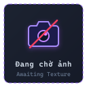
Upgraded Ender Dragon
Đang đợi ảnh
Máu: 300 HP · Giáp: 12 Armor · Kháng Nổ Giường · Khiên Tinh Thể Miễn Nhiễm Sát Thương
Rồng Ender trong Stellarity có 300 HP, 12 Giáp nội tại và được bảo vệ bởi khiên tinh thể từ các trụ End Crystal. Trong khi bay, Rồng sử dụng 4 kỹ năng tầm xa và chỉ đáp xuống đài trung tâm khi còn 1 HP để chờ đòn kết liễu.
Các Pha Giao Tranh (Fight Phases)
Pha 1: Khiên Tinh ThểMiễn nhiễm 100% sát thương khi còn End Crystal
Pha 2: Không ChiếnBắn cầu axít, quét tia laser 360°, gọi Shulker
Ball of Blight: Chùm cầu axít tím vận tốc cao phát nổ diện rộng
Beam Thingy (Laser 360°): Quét tia năng lượng xoay quanh đảo trung tâm
Shulker Hell: Triệu hồi 6 - 8 con Shulker.
Chainfire & Roar: Tiếng gầm hơi thở rồng kèm chuỗi lửa thiêu đốt mặt đất
Chiến lợi phẩm & Tiến trình mở khóa (Post-Dragon Progression)Tỉ lệ rơi 100%
Dragonblade (Cắm trên Altar sau khi hạ Rồng lần đầu)+66% rơi Life Crystal (Hồi máu Regen IV khi đứng yên)+20% rơi Dragon Wings (Cánh Rồng)
Tiêu diệt Rồng kích hoạt vĩnh viễn bệ thờ Altar of The Accursed tại đài trung tâm và mở cổng Gateway Portal dịch chuyển ra các cụm đảo ngoài.
Empress of Light (Boss sau Rồng)
750 – 850 HP · 3 Biến Thể · Altar of The Sacred
Triệu hồi: Thả 1x Starlight Soot lên Altar of The Sacred · Phân nhánh 3 Biến thể: Night, Daytime & Radiant
Boss triệu hồi tại Chapel of Light (quần xã The Hallow) sau khi hạ Rồng Ender. Trận đánh chia làm 2 giai đoạn (Phase 1 & Phase 2) với 4 đòn tấn công: lướt (Dash), phóng kiếm (Ethereal Lance), bắn đạn tầm nhiệt (Prismatic Bolts) và đóng kén hồi máu.
1. Dạng Ban Đêm / The End
750 HP
Máu tối đa750 HP (Mặc định)
Cách triệu hồiThả 1x Starlight Soot lên Altar vào ban đêm / The End
Cơ chế Kỹ năng & Giai đoạn giao tranh (Boss Attack Mechanics)Chu kỳ 2 Pha (Phase 1 & Phase 2)
• Dash (Lướt Xuyên Không): Empress quay mặt về phía người chơi và dịch chuyển xuyên không 22.5 blocks trong 15 ticks. Ở Phase 2 lướt liên hoàn nhiều lần.
• Ethereal Lance (Phi Kiếm Ánh Sáng): Triệu hồi 20 thanh kiếm xung quanh người chơi và phóng lao sau 1.3 giây. Dạng 2 tạo các đợt kiếm song song; Dạng 3 (Daytime/Radiant) bắn úp sọt từ phía sau lưng.
• Prismatic Bolts (Đạn Cầu Tầm Nhiệt): Bắn 20 tia đạn bám đuổi mục tiêu. Dạng 2 bắn thành vòng tròn xoáy và gây hiệu ứng bỏng lửa Prismatic Inferno.
• Teleport & Heal (Dịch Chuyển & Kén Hồi Máu): Dịch chuyển quanh người chơi giữa các đòn đánh. Ở Phase 2, Empress có thể cuộn thành quả cầu trong 3 giây để hồi máu và miễn nhiễm sát thương (tối đa 3 lần mỗi trận).
Tin nhắn trạng thái khi triệu hồi Boss sẽ đổi mã màu tương ứng theo từng biến thể (Tím Night / Vàng Daytime / Hoàng Kim Radiant).
Shulking (Vua Shulk)
Đang đợi ảnh
Máu cấu hình (Configurable) · Triệu hồi bằng Shulker Body tại Altar of The Sacred · Phá vỡ địa hình Purpur
Boss Shulker xuất hiện trên đỉnh pháo đài End City hoặc được triệu hồi bằng cách thả Thịt Thân Shulker (Shulker Body) lên Altar of The Sacred. Shulking có thanh máu Bossbar riêng và bộ kỹ năng phá khối xung quanh:
Cơ Chế Khống Chế & Phá Địa Hình
Phá Hủy Khối Block (Block Breaking): Phá vỡ gạch Purpur và End Stone xung quanh, ngăn người chơi dựng tường ẩn nấp.
Chuyển Hướng Đạn (Redirect Bullets): Đổi hướng toàn bộ đạn Shulker trong khu vực lao thẳng vào mục tiêu.
Gai Nhọn Trồi Đất (Shulking Spikes): Tạo hàng gai nhọn trồi lên từ mặt sàn gây sát thương xuyên giáp.
Tấn Công Tầm Xa & Gọi Quái Phụ Trợ
Tia Quét Laser (Ray Beam): Bắn chùm tia năng lượng tầm xa quét ngang khu vực.
Shulker Cảm Tử (Explosive Shulker): Triệu hồi các Shulker phát nổ diện rộng khi áp sát mục tiêu.
Shulkhead Skeleton: Bộ xương đội vỏ Shulker cầm cung tên bắn hỗ trợ boss.
PHẦN THƯỞNG CHIẾN THẮNGRơi từ Boss Shulking
8–16++
Cung cấp nguồn nguyên liệu Shulker dồi dào để chế tạo Bộ Giáp Shulker Armor, Bộ Công Cụ Shulker Haste I và món bánh mặn phục hồi Shepherd's Pie.
Quái Vật Biến Dị & Kẻ Địch Nguy Hiểm Tại The End
Enderman (Đại Tu Cơ Chế)
Đang đợi ảnh
Máu: 20 · Sát thương: 3.5–5 · Tốc độ dịch chuyển x1.5
Enderman trong Stellarity di chuyển và dịch chuyển nhanh hơn bản gốc. Nếu người chơi không cầm khiên chắn, đòn đánh của Enderman sẽ xuyên giáp và trừ thẳng vào máu (). Khi chết rơi 0–2 miếng thịt Enderman Flesh.
Xuất hiện: Khắp các quần xã The EndQuái Phổ Biến
+
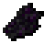
Ăn sống hồi 4 đói, dịch chuyển 8m (80% đói 40s) hoặc nướng với Bột Quỷ Lửa Blaze Powder thành Grilled Enderman Flesh.
Shulker (Quái Vỏ Cứng End City)
Quái Vật End City
Máu: 30 HP · Giáp: 20 (khi đóng vỏ) · Hiệu ứng: Levitation
Trấn giữ các tháp Trial End City. Shulker bắn các chùm đạn xoắn ốc truy kích dày đặc. Bị trúng đạn khiến người chơi bay lơ lửng lên không trung (rất nguy hiểm khi ở gần mép vực Void). Khi bị tiêu diệt, Shulker có 75% cơ hội rơi 1 Thân Shulker (Shulker Body), mỗi cấp Looting tăng thêm +5%. Shulker Body là đồ ăn (hồi 4 đói, dịch chuyển 16 ô), dùng để triệu hồi Boss Shulking tại Altar of The Sacred và nấu bánh Shepherd's Pie.
Xuất hiện: End City & Trial TowerVật Liệu Chế Tạo
Shulker Shell (Vỏ Shulker)+Shulker Body (75% + 5%/cấp Looting)
Dùng Shulker Shell để chế tạo Shulker Box / Giáp Shulker. Dùng Shulker Body để hiến tế triệu hồi Boss Shulking hoặc nấu bánh Shepherd's Pie.
Stray
Đang đợi ảnh
Chỉ số tăng cường · Mặc một phần giáp Kim Cương · 1% cầm Harvester
Xuất hiện tại các quần xã băng giá của The End (như Frosted Hills, Frozen Spikes). Quái Stray có 1% tỉ lệ sinh ra cầm đao Harvester, mặc một phần giáp Kim Cương, được tăng chỉ số máu/sát thương và luôn rơi đao (100%) khi bị tiêu diệt.
Xuất hiện: Các Quần Xã Băng Giá The End1% Cầm Harvester · 100% Rơi Đao
Giáp Kim Cương (Một phần)+Đao Harvester (100% rơi khi cầm)
Nguồn duy nhất để săn đại đao Harvester trong chế độ sinh tồn.
Voided Zombie
Quái Đột Biến · The End
Máu: 30 HP · Hiệu ứng: Jinx (Giảm Giáp) & Rút Máu
Biến thể Zombie tại The End có tốc độ chạy và phạm vi phát hiện mục tiêu xa hơn Zombie ở Overworld. Đòn đánh áp đặt hiệu ứng Jinx (giảm chỉ số giáp và độ cứng giáp của mục tiêu). Thường xuất hiện theo nhóm tại các phế tích và lồng Trial Spawner.
Xuất hiện: Đảo Ngoài The End & Tàn TíchQuái Đột Biến
Thịt Thối Nhiễm Xạ+Quặng End
Nên tiêu diệt từ xa bằng Cung Sharanga / Spectral Fury để tránh bị dính bùa giảm giáp Jinx.
Voided Skeleton
Xạ Thủ Hư Không · The End
Máu: 30 HP · Cầm Cung Call of The Void (0.04% – 4% rơi) · Mũi tên Hư Không
Cốt đột biến Hư Không xuất hiện tại các quần xã Void và phế tích. Luôn sinh ra với cây cung Call of The Void trên tay, bắn ra những mũi tên Hư Không trừ thẳng vào máu tối đa của người chơi và vỡ vụn gây sát thương nổ văng diện rộng.
Xuất hiện: Quần xã Void & End CityXạ Thủ Hư Không
Xương Quái Void+Cung Call of The Void (Tỉ lệ rơi 0.04%–4%)
Sử dụng Khiên Crest of The End hoặc nấp sau tường chắn để áp sát tiêu diệt.
Voided Slime
Chất Nhờn Hư Không · The End
Máu: Đa tầng kích cỡ · Địa bàn: End City & Quần xã Void · Phân tách bầy đàn
Biến thể Slime màu tím tại The End và các tháp Trial End City. Khi bị tiêu diệt, Voided Slime tách thành nhiều cá thể nhỏ hơn, dễ vây ép người chơi trong hành lang hẹp.
Xuất hiện: Đầm lầy Void & Tháp End CityChất Nhờn Hư Không
Rơi Slime Ball Hư Không & Kinh nghiệm
Dùng đòn quét của Dragonblade hoặc quét kiếm để tiêu diệt các khối slime con tức thì.
Phantom (Bóng Ma Tuần Tra Void)
Đang đợi ảnh
Máu: 20 HP · Tốc độ bay tăng · Đòn đánh hất văng
Bay lượn ở tầng cao tại The End và lao xuống hất văng người chơi đang lướt Elytra. Khi bị tiêu diệt rơi Phantom Membrane và có 3%–15% tỉ lệ rơi cánh Phantom Wings.
Xuất hiện: Tầng Cao Không Gian Void & ShadowlandsKẻ Đi Săn Bầu Trời
Phantom Membrane (Màng Cánh Phantom)
Mang theo Mèo End hoặc ép bùa gió để đẩy lùi đòn lao bổ nhào của Phantom.
Voided Silverfish (Cá Bạc End)
Côn Trùng Hư Không · The End
Máu: 8 HP · Sinh ra từ hiệu ứng Infestation · Không rơi EXP
Cá bạc sinh ra khi người chơi hoặc quái vật dính hiệu ứng môi trường Infestation (mỗi đòn đánh trúng có tỉ lệ sinh ra 1–3 con dưới chân). Cá bạc tấn công liên tục làm gián đoạn nhịp đánh và không rơi kinh nghiệm (0 EXP) để chống treo máy AFK.
Xuất hiện: Đảo The End (Hiệu ứng Infestation)Côn Trùng Hư Không
Không rơi kinh nghiệm (0 EXP)
Sử dụng đòn quét diện rộng của Dragonblade hoặc lửa càn quét để tiêu diệt bầy cá bạc nhanh gọn.
Động Vật Đồng Hành & Tinh Linh Thuần Hóa Tại The End
Pixie (Tinh Linh Ánh Sáng)
Đang đợi ảnh
Máu: 10 HP · Quần xã: The Hallow · 5 Sắc tố phát quang
Sinh vật phát sáng bay lượn tại quần xã The Hallow với 5 màu khác nhau. Người chơi có thể dùng chai thủy tinh rỗng nhấp chuột phải để bắt thành đèn trang trí Pixie in a Jar, hoặc tiêu diệt để lấy 0–4 Starlight Soot.
Xuất hiện: Quần xã The HallowTinh Linh Cổ Tích
Starlight Soot (Bột Tinh Tú Triệu Hồi Boss)
Dùng bình thủy tinh rỗng nhấp chuột phải vào Pixie để đóng lọ làm đèn phát sáng trang trí căn cứ.
Ender Wolf (Sói End Tím Thuần Hóa)
Đang đợi ảnh
Máu: 20 · Sát thương: 4 · Kháng một phần sát thương Void
Loài sói bản địa của The End với đôi mắt tím phát quang và bộ lông xám thạch anh. Có thể thuần hóa bằng Xương quái Void. Sau khi thuần hóa, Ender Wolf tấn công quái vật bảo vệ chủ nhân và không bị đẩy lùi trước tiếng gầm của Rồng.
Thuần hóa: Dùng Xương quái vật The EndThú Cưng Đồng Hành
Thú Cưng Bảo Vệ Trung Thành
Mắt của sói Ender Wolf tự phát sáng xuyên bóng tối, giúp phát hiện quái vật từ khoảng cách xa.
Ender Cat (Mèo End Xua Đuổi Quái)
Đang đợi ảnh
Máu: 20 HP · Thuần hóa bằng cá Ender Koi hoặc Frost Minnow
Mèo sinh sống quanh các ngôi làng End, có bộ lông đen ánh tím. Ender Cat xua đuổi Phantom và Creeper trong phạm vi 16 blocks, giúp người chơi xây cầu qua vực Void mà không bị Phantom lao vào.
Thuần hóa: Dùng cá Ender Koi câu từ VoidHộ Vệ Xua Đuổi Quái
Cá Ender Koi / Frost Minnow
Đặt mèo Ender Cat ngồi tại các trạm dịch chuyển để ngăn Phantom tấn công.
Flesh Piglin (Piglin Lạc Lối)
Chiến Binh Lạc Lối · The End
Máu: 32 HP · Vũ khí: Kiếm vàng & Nỏ · Rơi vàng End
Biến thể Piglin xuất hiện tại quần xã Flesh Tundra và các phế tích trong The End. Trang bị kiếm vàng hoặc nỏ, có thể trao đổi một số vật phẩm End khi người chơi đưa thỏi vàng.
Xuất hiện: Tiền đồn phế tích Nether cổ tại EndChiến Binh Lạc Lối
Phôi Vàng & Mảnh Kim Loại End
Trang bị một món đồ vàng trên người sẽ giúp tránh bị Flesh Piglin chủ động tấn công.
6. Khung Vật Phẩm & Công Thức Chế Tạo: Giáp, Cánh Elytra & Phôi Rèn
Chỉ số thuộc tính và công thức rèn tại Altar of The Accursed hoặc Bàn chế tạo cho 4 Bộ Giáp Chiến Đấu, Nguyên Liệu Nâng Cấp và Các Mẫu Cánh Bay (Wings):
Set Bonus (Holy Protection): Sau 20s tích tụ, đòn sát thương tiếp theo đánh trúng bạn sẽ bị hủy hoàn toàn về 0, đồng thời bạn miễn nhiễm sát thương và đẩy lùi trong 5 giây kế tiếp (Hồi chiêu 16–22s).
Nơi rèn: Altar of The AccursedTừng món
+
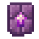
+4
Giữ nguyên toàn bộ bùa phù phép từ giáp Netherite ban đầu.
Set Bonus: Giảm 20% mọi sát thương nhận vào (Resistance I vĩnh viễn), miễn nhiễm Bay Lơ Lửng (Levitation) và Khô Héo (Wither). Khi bị đánh có 33% tỉ lệ bắn 3 viên đạn Shulker đuổi theo kẻ tấn công.
Nơi rèn: Altar of The AccursedTừng món
++4
Công thức này cũng dùng để nâng cấp bộ công cụ và vũ khí Shulker.
Champion Armor
Cộng Dồn Sát Thương
Giáp: 20 · Độ cứng: 12 · +15% Tốc đánh · +10% Sát thương
Set Bonus (Wrath of The Ancients): Mỗi đòn chém trúng đích tăng +5% sát thương cho đòn tiếp theo, cộng dồn tối đa 5 lần (+25% sát thương, cộng với 10% sẵn có là +35% sát thương).
Nơi rèn: Altar of The AccursedTừng món
++4
Cộng dồn trực tiếp với chỉ số +12% sát thương của quả Duskberry.
Floral Armor
Chuyên Xạ Thủ & Tốc Chạy
Giáp: 20 · Độ cứng: 12 · Tăng tốc độ tên & Sát thương tầm xa
Set Bonus (Floral Bloom): Bộ giáp cho người dùng cung nỏ, rèn từ Gỗ và Lá Anh Đào. Tăng sức sát thương và vận tốc của cung nỏ, tạo hiệu ứng hoa nở Bloom khi bắn trúng quái, để lại vệt hoa đào khi chạy và ngụy trang tàng hình trong các khối hoa lá.
Nơi rèn: Altar of The Accursed4 Món (Mũ / Áo / Quần / Giày)
++8
Mỗi món rèn độc lập và bảo lưu 100% bùa phù phép bảo vệ gốc.
Reinforced Horse Armor
Bảo Hộ Chiến Mã
Giáp ngựa nâng cấp từ Kim Cương · Tăng giáp và kháng đẩy lùi
Giáp ngựa nâng cấp từ giáp ngựa Kim Cương bằng 4 tấm Chorus Plating tại Altar of The Accursed, tăng khả năng chống chịu cho ngựa khi di chuyển trên các đảo The End.
NƠI RÈN: ALTAR OF THE ACCURSED
+
4
+
Nâng cấp trực tiếp từ Diamond Horse Armor tại bệ thờ.
Nhóm 2: Nguyên liệu chế tạo độc quyền (Stellarity Materials)
Nguyên liệu rèn Giáp Champion, Sách Phép & Nấu Vạc
Phôi hợp kim giữa Thỏi Sắt và Quả Chorus nổ (Popped Chorus Fruit). Dùng làm vật liệu bắt buộc để rèn bộ giáp Champion (4x/món), sách phép Book of Jinx (8x) và pha thuốc Endurance trong Vạc Hơi Thở Rồng.
Nơi chế tạo: Bàn Chế Tạo (Crafting Table)Tỉ lệ 1 ra 1
+2➜
Cũng có thể thu thập khi dùng Purpur Key mở rương Vault tại End City.
Hallowed Ingot
Thỏi Kim Loại Thánh
Nguyên liệu rèn Hallowed Armor, Kaleidoscope & Prismember
Thỏi kim loại của quần xã The Hallow. Nhận được bằng cách mở Vault tại End City, đổi từ dân làng Armorer (12 Emerald = 4 thỏi) hoặc thánh hóa (Consecration) từ Thỏi Sắt theo tỉ lệ 1:1.
Cách lấy: Thánh Hóa Consecration (The Hallow)Quy đổi tỉ lệ 1 : 1
thả xuống nước The Hallow⇌
Có thể thả vào hồ nước hồng tím tại The Hallow hoặc Vạc Nước đã pha Starlight Soot (chuyển hóa hai chiều 1:1).
Enderite Upgrade Template
Khuôn Rèn End
Nguyên liệu bắt buộc để nâng cấp mọi trang bị End
Mở từ rương Ominous Vault trong End City bằng chìa khóa Gilded Purpur Key. Dùng tại bệ thờ Altar of The Accursed để nâng cấp đồ Netherite lên trang bị End.
Nơi nhân bản: Altar of The Accursed1 ra 2 khuôn
+9+
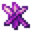
5
Nên chừa lại ít nhất 1 khuôn trong rương để nhân bản tiếp.
Enderite Shard
Mảnh Kim Loại Hư Không
Nguyên liệu nhân bản khuôn & rèn Tamaris
Mảnh khoáng thạch màu tím đậm rơi từ rương Vault End City, đào từ quặng sâu hoặc rơi từ các sinh vật Voided trong Trial End City.
Cách kiếm: Đào End Stone (2%) & VaultsTiền tệ End Villagers
Đào End Stone (2% rơi)hoặcMở Vaults / Rương Ngục End
Tooltip: "Contains a fraction of the unknown". Dùng để nhân bản Khuôn Enderite, rèn vũ khí và giao dịch với Dân Làng End.
Sand Rune
Cổ Thư Sa Mạc
Rương di tích Endless Dunes · Nguyên liệu rèn Sandstorm Trident
Phiến cổ thư khắc hoa văn bão cát cổ xưa, chỉ có thể tìm thấy bên trong các rương kho báu thuộc cấu trúc di tích tại quần xã Endless Dunes.
Nơi tìm thấy: Rương Di Tích Endless DunesCông dụng: Rèn Đinh Ba Gió
Khám phá di tích kim tự tháp Endless Dunes➜Rèn Sandstorm Trident tại Altar of The Accursed
Nguyên liệu dùng để rèn đinh ba tạo luồng gió lướt Slipstream.
Starlight Soot (Muội Tinh Tú)
Muội Tinh Tú · Pixie Dust
Rơi 0-4 từ Tiểu Tiên (Pixie) · Hợp nhất Pixie Dust bản cũ · Triệu hồi Empress of Light
Bụi muội tinh tú rơi từ Pixie (0–4) hoặc câu được tại quần xã The Hallow (thay thế cho Pixie Dust ở các bản Stellarity cũ). Dùng để nấu thuốc trong Vạc Hơi Thở Rồng, kích hoạt nước Thánh Hóa (Consecration) và triệu hồi Boss Empress of Light.
Nguồn thu thập: Rơi từ Pixie (0-4)Triệu hồi Boss Empress of Light
Tiêu diệt Tiểu Tiên (Pixie) tại The Hallow➜Thả lên Altar of The Sacred để triệu hồi Boss
Tooltip gốc: "May contain fairy". Khi cầm kèm Kaleidoscope ở tay phụ và thả Starlight Soot lên bệ thờ sẽ triệu hồi biến thể Radiant Empress of Light.
Ngoài cánh Elytra tiêu chuẩn mở từ két cá nhân hóa (Elytra Vault) trên tàu End Ship, Stellarity bổ sung 3 mẫu cánh tùy biến với chỉ số tốc độ, trọng lực, cự ly rơi an toàn và giáp khác nhau:
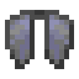
Elytra (Tiêu Chuẩn)
Cánh Cứng Vanilla
Tốc độ: 1.0x · Trọng lực: 1.0x · Độ bền: 432 · Sửa bằng Phantom Membrane
Cánh lượn tiêu chuẩn của Minecraft, dùng kết hợp với Pháo hoa (Firework Rockets). Có thể ép bùa Unbreaking, Mending cùng 2 bùa dành riêng cho cánh của Stellarity (Soaring, Plated).
Cách lấy: Tàu Bay End ShipKhoang Elytra Vault
➜
Mở Elytra Vault trên Tàu Bay (End Ship) bằng Winged Key (100% rơi cánh, cơ chế két khóa cá nhân chống cướp đồ).
Phantom Wings (Cánh Bóng Ma)
Pre-Dragon · Lướt Gần
Tầm bay: -50% · Trọng lực: 0.8x · Rơi an toàn: +8 ô · Giảm rơi: -30% · Độ bền: 70
Cánh lướt cự ly ngắn có thể kiếm trước khi hạ Rồng Ender. Giảm 20% trọng lực, giảm 30% sát thương khi tiếp đất và cộng thêm 8 ô khoảng cách rơi an toàn. Sửa chữa bằng Phantom Membrane.
Cách lấy: Săn Quái PhantomRơi 3% – 15%
➜
Săn Phantom trên bầu trời đêm Overworld hoặc tại các đảo The End (tỉ lệ rơi tăng theo cấp Looting).
Dragon Wings (Cánh Rồng Ender)
Post-Dragon · Giáp +3
Giáp: +3 · Độ cứng: +2 · Tốc chạy: -8% · Giảm 60% DMG khi Lướt · Độ bền: 648
Đúc từ vảy rồng kiên cố của Rồng Ender Jean. Cung cấp 3 điểm giáp, 2 độ cứng giáp và giảm 60% sát thương nhận vào khi đang lướt cánh (Gliding), đổi lại giảm nhẹ 8% tốc độ di chuyển trên mặt đất. Sửa chữa bằng Phantom Membrane.
Cách lấy: Boss Ender DragonTỉ lệ rơi 20%
➜
Rơi trực tiếp từ Rồng Ender Jean khi bị tiêu diệt tại tế đàn đảo trung tâm.
Empress Wings (Cánh Thánh Quang)
Cầu Vồng · Tốc Độ +10%
Tốc độ: +10% · Trọng lực: -35% · Rơi an toàn: +4 ô · Giảm rơi: -25% · Độ bền: 432
Cánh lượn rơi từ Boss Empress of Light: tăng +10% tốc độ bay, giảm 35% trọng lực, giảm 25% sát thương rơi và để lại vệt sáng cầu vồng phía sau khi lướt. Sửa chữa bằng Phantom Membrane.
Cách lấy: Boss Empress of LightRơi 10% – 100%
➜
Hạ gục Boss Empress of Light (Ban Đêm: 10-20% · Ban Ngày: 50% · Biến thể Radiant: 100%).
7. Khung Vật Phẩm & Công Thức Chế Tạo: Vũ Khí & Công Cụ Độc Quyền
Toàn bộ 15 vũ khí chiến đấu và bộ công cụ độc quyền trong phiên bản Stellarity mới nhất, bao gồm đại kiếm, song dao linh hồn, đại đao gặt linh hồn, lưỡi hái, vũ khí thánh quang từ Empress of Light và bộ công cụ Shulker Haste I:
Đại kiếm rút từ bệ thờ Đảo Chính. Đòn đánh thứ 3 liên tiếp kích hoạt Otherworldly Punch gây sát thương xuyên giáp, hất văng mục tiêu và làm choáng tạm thời. Bùa Knockback làm tăng thêm cự ly hất văng.
Cách lấy: Altar of The AccursedRơi duy nhất 1 lần
Cắm sẵn trên Bệ thờ Altar of The Accursed sau khi Rồng Ender bị tiêu diệt lần đầu tiên
Mỗi thế giới chỉ sinh ra duy nhất 1 thanh Dragonblade.
Tamaris
Dịch Chuyển Kết Liễu 10m
Sát thương: 3.5 · Tốc đánh: 1.6 · Độ bền: 1561 · Sửa bằng Netherite Ingot
Khi kẻ địch còn dưới 25% máu, một dấu ấn màu xám sẽ hiện lên trên đầu mục tiêu. Nhấn Shift để dịch chuyển tức thời tới mục tiêu trong phạm vi 10m và kết liễu ngay lập tức.
Nơi rèn: Altar of The AccursedVũ khí kết liễu
++8+
Mục tiêu có Totem hoặc Holy Protection sẽ kích hoạt thời gian hồi chiêu kết liễu 11 giây.
Đại đao gặt linh hồn của The End. Hạ gục quái vật để tích lũy linh hồn, gia tăng vĩnh viễn sát thương từ 2 lên tối đa 8 . Mỗi thanh Harvester có thể nhận tối đa 3 Kỹ Năng Linh Hồn khi tiêu diệt các quái vật tương ứng. Đạt Tier 4 kiếm trở nên không thể phá hủy (Unbreakable). Không thể ép bùa Sharpness hoặc Fire Aspect.
Tiến Trình 5 Cấp Tiến Hóa (Tier 0 ➜ Tier 4)Hấp thụ linh hồn quái vật để gia tăng kích thước, sát thương vĩnh viễn và tiến hóa ngoại hình
“-273.15°C: It is done growing in power, but it still has a taste for... a few specific souls. Even the grim power of this ice sword has its limits...”
Đạt độ không tuyệt đối (-273.15°C). Kích thước tối đa, phủ hiệu ứng linh hồn tím và không bao giờ bị hỏng (Unbreakable).
8 Kỹ Năng Linh Hồn Đặc Thù (Tối đa 3 kỹ năng / thanh đao)Hạ gục quái vật chỉ định để thức tỉnh kỹ năng tương ứng (kiếm rung chuyển khi hấp thụ)
Frostburn (Blaze / Magma Cube): Đòn đánh gây bỏng lạnh theo thời gian; quái hệ lửa chịu thêm sát thương từ hiệu ứng này.
Embrittlement (Wither Skeleton): Khiến mục tiêu nhận thêm sát thương đóng băng từ mọi nguồn trong thời gian ngắn.
Arctic Wind (Breeze): Tạo vùng khí lạnh làm chậm quái xung quanh trong bán kính 9 block, càng gần người cầm hiệu ứng làm chậm càng cao.
Piercing Cold (Witch / Vindicator): 25% cơ hội phá giáp kẻ địch, có thể cộng dồn nhiều tầng khi tấn công liên tiếp.
Frost Barrier (Iron Golem / Shulker / Piglin Brute): Tiêu diệt quái vật ban tặng Máu hấp thụ (Absorption) và Kháng cự giảm sát thương tạm thời.
Echo (Warden): Đòn chém tạo tiếng vang chém bồi sát thương chuẩn (unmitigated) xuyên giáp sau một thoáng ngắn.
Anima Conduit (Wither): Linh hồn hấp thụ được nghiền nát thành hồi máu và thanh no đói, kể cả khi kiếm đã đạt max cấp.
Cryonics (Ender Dragon): Khi kích hoạt Totem, đóng băng người cầm để miễn nhiễm sát thương và hồi máu nhanh, kết thúc bằng vụ nổ 7.5 sát thương chuẩn (hồi chiêu 60s).
Cách lấy: Bất kỳ quần xã băng tuyết The EndTỉ lệ 1% từ Stray
Rơi 100% khi hạ gục Stray cầm Harvester (1% tỉ lệ xuất hiện ở các quần xã băng giá The End, trang bị giáp Kim Cương và tăng chỉ số)
Sửa độ bền trên Đe bằng Blue Ice (Băng Xanh) khi chưa đạt Tier 4. Khi đạt Tier 4, đao trở thành Unbreakable (Bất tử vĩnh viễn).
The Beginning and The End
Cặp Song Dao Linh Hồn
Sát thương: 2.5 · Tốc đánh: 2.0 · Độ bền: 496 · Sửa bằng Netherite Ingot
Cặp song dao gồm The Beginning và The End. Khi tấn công, dao thu hút các Linh Hồn (Spirits) xuất hiện quanh chiến trường. Khi cầm cả 2 thanh trên 2 tay và nhìn vào Linh Hồn, bạn sẽ dịch chuyển tức thời tới Linh Hồn đó, gây sát thương diện rộng xuyên giáp và nhận buff tăng sát thương ngắn hạn. Cầm The Beginning ở tay phụ tăng +1 DMG; cầm The End ở tay phụ tăng +5% tốc chạy.
Cách lấy: Ominous Vaults (End City)Cặp song dao
Mở từ Ominous Vault tại End City bằng Gilded Purpur Key
Cấp bùa Phù Phép của cả 2 thanh dao sẽ cộng hưởng cùng nhau khi chiến đấu.
Starless Scythe
Chém Quét Diện Rộng · Hút Máu 5%
Sát thương: 5 · Tốc đánh: 0.9 · Độ bền: 1232 · Sửa bằng Netherite Ingot
Lưỡi hái Hư Không thực hiện các đòn chém quét diện rộng gây 60% sát thương lan lên mọi quái xung quanh. Mỗi đòn đánh trúng sẽ hút máu bằng 5% lượng sát thương gây ra để hồi phục cho người chơi. Có thể ép bùa của Cuốc (Hoe): Efficiency làm què quặt đối thủ, Fortune tăng thêm +2% hồi máu mỗi cấp bùa.
Cách lấy: Ominous Vaults (End City)Lưỡi hái hút máu
Mở từ Ominous Vault tại End City bằng Gilded Purpur Key
Phù hợp để đánh lan và hồi máu khi bị nhiều quái vật bao vây.
Stellar Striker
Bắn Sao Xuyên 50% Giáp
Sát thương: 5 · Tốc đánh: 0.9 · Độ bền: 2031 · Sửa bằng Netherite Ingot
Thanh kiếm tự động tích lũy các ngôi sao theo thời gian (0.6%/s, đánh trúng quái +2%, giết quái +3%). Khi đạt các mốc 10%, 20%, 45%, 70%, 100%, kiếm sẽ tích trữ được 1 ngôi sao (tối đa 5 sao). Khi giữ Shift + tấn công, toàn bộ sao tích lũy sẽ được phóng về phía trước tự tìm quái, mỗi sao gây 4.5 (gồm 3 nổ) với 50% xuyên giáp.
Cách lấy: Thợ Rèn Vũ Khí MasterEnd Village Trader
+64
Sau khi phóng sao, kiếm sẽ tạm ngưng tích tụ năng lượng trong 6 giây.
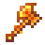
Kaleidoscope
Năng Lượng Mặt Trời · Unbreakable
Sát thương: 5 cơ bản (Xả đòn 1.65 – 15 ) · Tốc đánh: 0.8 · Độ bền: Bất tử (Unbreakable)
Đại rìu năng lượng mặt trời. Khi cầm trên tay chính, rìu tự động tích tụ năng lượng từ 0 đến 100 trong 7.5 giây. Khi mức tích lũy trên 33, đòn chém tiếp theo sẽ giải phóng toàn bộ năng lượng thành vụ nổ ánh sáng gây tới 15 (70% sát thương nổ lan) và đốt cháy kẻ địch xung quanh.
Cách lấy: Boss Empress of Light (Ban Ngày)100% Rơi từ Boss
Hạ gục Empress of Light tại Overworld vào Ban Ngày (Enraged Mode)
Kiếm không thể bị phá hủy, có thể dung hợp với sách phù phép trên Đe.
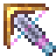
Prismatic Punch
Đạn Nổ Prismatic Inferno
Sát thương: 3.5 – 5.5 · Độ bền: 365 · Tốc độ đạn 120 block/s
Nỏ quang phổ chuyển đổi mọi mũi tên nạp vào thành đạn Prismatic Blast bay thẳng với vận tốc 120 block/s và không chịu trọng lực. Khi chạm mục tiêu sẽ phát nổ diện rộng và gây hiệu ứng Prismatic Inferno trong 6 giây. Bùa Multishot tăng gấp đôi bán kính nổ và nâng sát thương lên 13.
Cách lấy: Boss Empress of LightTỉ lệ rơi 50%
Hạ gục Empress of Light tại The End hoặc vào Ban Đêm
Vụ nổ quang phổ gây sát thương lớn lên quái vật nhưng không phá hủy khối block.
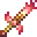
Prismember
Xoay Kiếm 360° · Xuyên 30% Giáp
Sát thương: 4 tim (8 DMG) · Tốc đánh: 1.6 · Độ bền: 2031 · Sửa bằng Netherite Ingot
Thanh bảo kiếm quang phổ rực lửa rơi từ Empress of Light. Khi ngồi cúi người (Shift) trong 0.4 giây, thanh kiếm tích đầy năng lượng lửa. Tấn công để kích hoạt cú chém xoay tròn 360 độ, gây 8 sát thương với 30% xuyên giáp và thiêu đốt mọi kẻ địch xung quanh bằng Prismatic Inferno trong 3 giây (+1s/cấp Fire Aspect). Hồi chiêu: 1 giây.
Cách lấy: Boss Empress of LightTỉ lệ rơi 25%
Rơi từ Empress of Light khi hạ gục ở The End hoặc Ban Đêm
Đòn chém xoay tròn giúp đánh lan và xuyên giáp nhóm quái vật vây quanh.
Fluffy Hammer of Justice
Ném Búa 40m · Xuyên Vật Cản
Sát thương: 7.5 · Tốc đánh: 0.2 · Độ bền: 1562
Chuột phải để ném búa bay lượn trên không trung tới 40 block, gây 15 sát thương xuyên qua các vật thể và khối block lên mọi kẻ địch trên đường bay trước khi tự động quay ngược lại tay người chơi. Kỹ năng ném búa không có thời gian hồi chiêu.
Cách lấy: Boss Empress of LightTỉ lệ rơi 30%
Rơi từ Boss Empress of Light khi bị đánh bại
Đặc biệt hiệu quả để tấn công kẻ địch ẩn nấp sau chướng ngại vật hoặc góc khuất.
Sharanga
Mũi Tên Không Trọng Lực
Sát thương: 3.25 – 5.5 · Độ bền: 385 · 25% Giữ lại mũi tên
Cung cổ đại tìm thấy trong Stronghold hoặc làng End. Chuyển đổi mũi tên phát quang (Spectral Arrow) thành Spectral Bolts bay thẳng không chịu trọng lực. Có 25% tỉ lệ không tiêu hao mũi tên khi bắn (tăng lên 50% nếu ép bùa Infinity).
Cách lấy: Stronghold & Làng EndCung cổ đại
Rơi từ Illusioner trong Stronghold (9%–18%)hoặcĐổi 64 Emerald tại Fletcher làng End
Là vũ khí nền tảng để nâng cấp lên Cung Linh Hồn Spectral Fury.
Spectral Fury
Đom Đóm Linh Hồn Tự Tìm Quái
Sát thương: 4 – 6.25 · Độ bền: 636 · Sửa bằng Cung thông thường
Cung linh hồn nâng cấp từ Sharanga. Khi bắn bằng Spectral Arrow và kéo căng cung trên 1.5 giây, phát bắn tạo ra một đom đóm linh hồn Wisp. Wisp tồn tại trong 7 giây, tự động truy đuổi quái vật trong phạm vi 16m và xuyên qua tối đa 3 kẻ địch liên tiếp. 25% cơ hội giữ lại mũi tên.
Nơi rèn: Altar of The AccursedCung linh hồn
++3+8
Wisp tự động chuyển hướng sang các mục tiêu đứng gần nhau trong bán kính 16m.
Sandstorm Trident
Đường Hầm Gió Slipstream
Đinh ba bão cát cường hóa · Triệu hồi luồng gió xoáy lốc
Khi phóng đinh ba, đường bay tạo ra một đường hầm gió lốc xoáy (Slipstream Wind Tunnel). Luồng gió cuốn và đẩy mạnh các thực thể theo hướng bay của đinh ba để kiểm soát vị trí trên chiến trường.
Nơi rèn: Altar of The AccursedĐinh ba bão cát
+++2
Lấy cảm hứng từ bùa Slipstream trong datapack Air Enchantments.
Call of The Void
Cung Tiễn Hư Không
Sát thương: Biến thiên (+8% vận tốc & sát thương) · Độ bền: 424 · Hiệu ứng Voided I
Toàn bộ mũi tên bắn ra từ cung này chuyển thành Mũi Tên Hư Không (Void Arrows) bay nhanh hơn 8% (+8% sát thương) và gây hiệu ứng Voided I (-20% máu tối đa). Khi chạm mục tiêu hoặc khối cứng, mũi tên tách thành 9 – 11 mảnh vỡ (shrapnel) trong bán kính 3.6m, mỗi mảnh gây 2 .
Cách lấy: Voided Skeleton / Altar of The AccursedCung Hư Không
++16+8
Rơi từ Voided Skeleton (tỉ lệ 0.04% – 4%) hoặc rèn tại Altar of The Accursed. Sửa độ bền trên Đe bằng Cung thường (Bow).
Shulker Tools & Weapons
Haste I Vĩnh Viễn · Đào Nhanh +20%
Bộ 6 món: Kiếm, Giáo, Rìu, Cúp, Xẻng, Cuốc · +0.25 · Độ bền: 2701
Bộ vũ khí và công cụ nâng cấp từ Netherite sau khi hạ Rồng, gồm Kiếm, Giáo (Shulker Spear), Rìu, Cúp, Xẻng và Cuốc Shulker. Khi cầm trên tay, người chơi nhận hiệu ứng Haste I (+20% tốc độ đào khối, +10% tốc đánh) và +0.5 sát thương so với đồ Netherite, cùng độ bền 2701 điểm.
Nơi rèn: Altar of The AccursedTừng món
++4
Giữ nguyên toàn bộ bùa phù phép từ công cụ Netherite ban đầu. Đạt danh hiệu Absolute Devotion khi nâng cấp cuốc Shulker Hoe.
8. Khung Vật Phẩm & Công Thức Chế Tạo: Sách Phép, Phụ Kiện & Câu Cá Hư Không
Hình ảnh Sprite gốc trích xuất từ tài nguyên chính thức của Stellarity v6 cho toàn bộ Sách Phép (Spellbooks), Khiên Chiến Đấu 3D (Shields), Phụ Kiện & Bảo Vật (Trinkets & Relics) cùng các loài cá đặc hữu câu được dưới vực sâu Void:
Nhóm 1: Sách Phép & Cẩm Nang Tra Cứu (Spellbooks & Manuals)8 Sách Phép & Cẩm Nang
6 cuốn sách phép dùng để dịch chuyển, tạo khiên chắn hoặc giảm giáp mục tiêu, cùng 2 cuốn cẩm nang tra cứu công thức của Altar of The Accursed và Vạc Hơi Thở Rồng:
Endonomicon
Sách Hướng Dẫn Tế Đàn
Functional v6.0.0+ · Công thức Altar of The Accursed · Mở bằng cách tung qua tế đàn
Sách hướng dẫn ghi chép toàn bộ công thức rèn trang bị của bệ thờ Altar of The Accursed. Ném bất kỳ cuốn sách phù phép (Enchanted Book) nào lên bệ thờ để nhận sách.
NƠI MỞ KHÓA: ALTAR OF THE ACCURSED
→
Mở khóa thành tựu "An Introduction to Dark Magic".
Flavors of The Void
Mới trong v6.0.0
Sách Công Thức Nấu Vạc · Câu cá Hư Không (Void Fishing) · 42 Món Ăn & Độc Dược
Sách tra cứu công thức nấu vạc bổ sung từ bản Stellarity v6.0.0. Tổng hợp danh sách các món ăn và bình thuốc pha chế bằng Vạc Hơi Thở Rồng (Dragon's Breath Cauldron).
CÁCH SỞ HỮU: CÂU CÁ HƯ KHÔNG (VOID FISHING)
→
Câu được ở bất kỳ quần xã Đảo Ngoài nào khi câu cá Hư Không (Void Fishing).
Book of Conveyance
Dịch Chuyển Tức Thời
Hồi chiêu: 2.5 giây · Phạm vi dịch chuyển: 16 khối · Đổi chỗ với mục tiêu
Khi nhấp chuột phải, dịch chuyển người dùng về phía trước 16 khối theo hướng nhìn. Nếu nhắm trúng một thực thể, người dùng và mục tiêu sẽ hoán đổi vị trí cho nhau.
NƠI RÈN: ALTAR OF THE ACCURSED / EVOKER
+
4
+
2
Dùng để vượt địa hình hoặc thoát vây khi giao tranh.
Book of Updraft
Luồng Gió Thăng Thiên
Hồi chiêu: 4.0 giây · Tạo cột gió bão · Hất tung thực thể lên 18 khối
Tạo một luồng gió xoáy hất tung người chơi và các thực thể xung quanh lên cao 18 khối, giúp lấy đà mở cánh Elytra hoặc thoát khỏi đám đông quái cận chiến.
CÁCH LẤY: RƯƠNG END CITY / VAULT / EVOKER
→
Có thể dùng để cất cánh Elytra từ mặt đất mà không tốn pháo hoa.
Phóng ra quả cầu ánh sáng gắn hiệu ứng Phát Sáng (Glowing) lên các thực thể trong bán kính 12 khối suốt 10 giây và đốt cháy quái vật hệ Undead/Void.
CÁCH LẤY: CHAPEL OF LIGHT / EVOKER STRONGHOLD
→
Giúp phát hiện vị trí quái vật trong các phòng tối của Stronghold và End City.
Book of Obstruct
Bức Tường Chặn Đạn
Hồi chiêu: 6.0 giây · Tạo khiên chắn hư không trong 4 giây · Chặn mọi loại đạn
Tạo một bức tường chắn trước mặt trong 4 giây, chặn toàn bộ mũi tên, đạn Shulker và cầu lửa bắn về phía người chơi.
CÁCH LẤY: RƯƠNG VAULT HOẶC HẠ SHULKING
→
Hữu dụng khi leo các tháp End City có nhiều Shulker bắn đạn đuổi.
Book of Jinx
Nguyền Rủa Xuyên Giáp
Hồi chiêu: 5.0 giây · Áp đặt Jinx trong 8 giây · Giảm 40% Giáp mục tiêu
Bắn tia nguyền rủa gây hiệu ứng Jinx trong 8 giây, làm giảm 40% chỉ số Giáp và Độ cứng giáp của mục tiêu trúng đòn.
NƠI RÈN: ALTAR OF THE ACCURSED
+
+
2
Thường dùng mở giao tranh trước khi dồn sát thương vào Boss có giáp cao.
Book of Return
Dịch Chuyển Hồi Hương
Vận niệm: 3.0 giây · Hồi chiêu: 60 giây · Dịch chuyển về điểm hồi sinh
Giữ chuột phải trong 3 giây không bị ngắt quãng để dịch chuyển về Giường hoặc Khối Neo Hồi Sinh (Respawn Anchor) đã đặt của người chơi.
CÁCH LẤY: RƯƠNG TÀU BAY END SHIP / OMINOUS VAULT
→
Giúp quay về căn cứ nhanh chóng khi thám hiểm các cụm đảo xa.
Nhóm 2: 3 Mẫu Khiên Chiến Đấu Đặc Chế (Custom Shields)3 Khiên Phản Đòn & Cơ Động
3 mẫu khiên có cơ chế riêng: phản đòn khi bị rìu bổ (Crest of The End), lướt nhanh qua mục tiêu (Copper Elektra Shield) và gọi sao băng rơi khi đỡ đòn (Starstruck Shield):
Khiên nâng cấp tại Altar of The Accursed. Mỗi lần đỡ đòn tích lũy +15% sát thương phản đòn (tối đa 3 tầng = +45% cho đòn đánh tiếp theo trong 2.5s). Cơ chế Axe Counter: khi bị Rìu phá khiên, tạo vụ nổ bán kính 4 khối gây 7 , gắn hiệu ứng Jinx (-40% giáp) trong 8s và nạp đầy 3 tầng phản kích (+45%).
Nơi rèn: Altar of The AccursedKhiên Phản Kích
++
Không bị cháy khi rơi vào dung nham hoặc lửa.
Lưu ý: Ảnh minh họa 3D tạm thời, sẽ cập nhật ảnh chụp trong game sau.
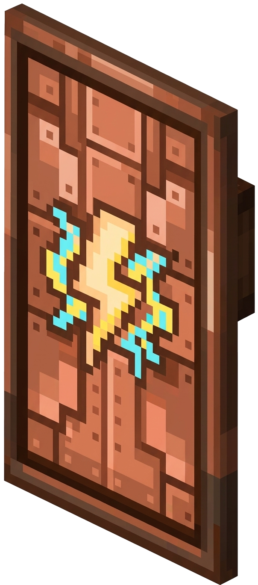
Copper Elektra Shield
Mới trong v6
Khiên Lướt Điện Bọc Đồng · Ngồi (Sneak) Lướt Tốc Độ Cao · Tối Đa 3 Lần Lướt
Khiên bọc đồng rèn cùng Breeze Rod. Khi đang giơ khiên và nhấn ngồi (Sneak), người chơi sẽ lướt nhanh về phía trước. Tích lũy tối đa 3 lần lướt (mỗi 8 giây hồi 1 lần; lần thứ 3 hồi chậm hơn). Nếu lướt xuyên qua kẻ địch sẽ được giảm 50% thời gian hồi chiêu.
Cách lấy: Vault End City / Tế ĐànKhiên Tốc Độ
+8+2
Dùng để rút ngắn khoảng cách hoặc thoát khỏi góc hẹp.
Lưu ý: Ảnh minh họa 3D tạm thời, sẽ cập nhật ảnh chụp trong game sau.
Starstruck Shield
Mưa Sao Băng · Bỏ Qua I-Frames
Rơi từ Empress of Light · Triệu hồi sao băng · Phản kích diện rộng
Mỗi lần đỡ đòn thành công sẽ gọi 3 ngôi sao băng rơi xuống vị trí kẻ tấn công, mỗi ngôi sao gây 3 nổ lan và bỏ qua khung bất tử (I-Frames) của mục tiêu. Khi mặc đủ bộ giáp Shulker, mỗi ngôi sao rơi trúng sẽ hồi 1 độ bền cho khiên.
Cách lấy: Boss Empress of LightTỉ lệ rơi 50%
➜
Khi giữ kèm Radiant Jewel trong túi đồ, khiên gọi 5 sao băng và gây cháy Holy Flames.
Nhóm 3: Phụ Kiện & Bảo Vật Hư Không (Trinkets & Relics)8 Bảo Vật Sinh Tồn & Khảm Ngọc
Các vật phẩm phụ trợ mang hiệu ứng bị động ngay khi để trong túi đồ (Any Slot v6.0.0+) hoặc khi cầm trên tay:
Void Pendant (Dây Chuyền Hư Không)
Hiệu Lực Mọi Ô (Any Slot v6.0+)
Post-Dragon · Tác dụng ở mọi ô túi đồ · 9 loại ngọc khảm nguyền rủa tại Tế Đàn
Phụ kiện nâng cấp sau khi hạ Rồng Ender. Từ bản v6.0.0+, hiệu ứng của dây chuyền kích hoạt ở bất kỳ ô nào trong túi đồ (có thể mang cùng lúc nhiều dây chuyền khác loại). Ném 1x Void Pendant + 1x Enderite Shard + 1 loại Ngọc/Khoáng sản lên Altar of The Accursed để khảm 1 trong 9 nhánh:
VisionAmethyst Shard
Nhìn đêm vĩnh viễn (Night Vision); khi ngồi rón rén khiến quái vật trong 15 block phát sáng dạ quang (Glowing) - Hồi chiêu 45s.
PowerCopper Ingot
Đòn đánh có 15% cơ hội phóng tia hồ quang điện gây thêm sát thương và giật lan sang mục tiêu lân cận.
FurorDiamond
Gia tăng trực tiếp +6% Tốc độ đánh nhân bội (Multiplicative Attack Speed), tối ưu cho Harvester & Dragonblade.
FortuneEmerald
Cộng trực tiếp +1 Điểm may mắn (Luck) cho nhân vật, tăng tỉ lệ nhặt kho báu và chiến lợi phẩm.
SpelunkingGold Ingot
Tăng +15% Tốc độ đào khoáng và +5% Hiệu suất khai thác mỏ (Mining Efficiency).
FortitudeIron Ingot
Cộng trực tiếp +1 Điểm Độ cứng giáp (Armor Toughness), gia cố khả năng kháng sát thương đòn đánh nặng.
WisdomLapis Lazuli
Có 5% cơ hội rơi hạt kinh nghiệm (XP) ngay trên người chơi mỗi khi nhận sát thương từ bất kỳ thực thể nào.
RageNetherite Ingot
Cộng trực tiếp +2 Sát thương cận chiến và +35% Tỉ lệ chém quét (Sweeping Damage Ratio).
AgilityNether Quartz
Cộng +4% Tốc chạy, +4% Sức nhảy cao và +40% Hiệu quả di chuyển linh hoạt.
NƠI RÈN: ALTAR OF THE ACCURSED
++
Dây chuyền cơ bản tìm thấy trong rương Khảo cổ xác tàu đắm (Shipwreck Archaeology).
Satchel of Voids
Tế Đàn Di Động · Altar of The Accursed
Altar di động tồn tại 32.55s · Hồi chiêu 30s · Biến Crying Obsidian thành Altar vĩnh viễn
Túi phụ kiện cho phép triệu hồi hoặc thiết lập bệ thờ Altar of The Accursed ngoài Đảo Chính:
Triệu hồi Di động (Portable Altar): Nhấp chuột phải vào một khối block bất kỳ để triệu hồi bệ thờ Altar of The Accursed tạm thời. Bệ thờ tự động biến mất sau 32.55 giây và có thể triệu hồi lại mỗi 30 giây bằng túi Satchel.
Thiết lập Vĩnh viễn (Permanent Altar): Đặt túi Satchel vào một Khung Vật Phẩm (Item Frame) gắn ở mặt bên khối Hắc Diện Thạch Khóc (Crying Obsidian) sẽ biến khối đá thành một bệ thờ Altar of The Accursed vĩnh viễn. Đập vỡ bệ thờ bất kỳ lúc nào để thu hồi lại cả Crying Obsidian và túi Satchel.
NƠI RÈN: ALTAR OF THE ACCURSED
1
+
2
+
4
+
64
+
64
Ném đúng 5 nguyên liệu trên lên bệ Altar of The Accursed ở Đảo Chính để rèn túi Satchel of Voids.
Enderman's Hand
+3 Khối Tầm Với
Rơi 10% từ Enderman · Tác dụng ở mọi ô túi đồ · Tăng tầm với tương tác
Phụ kiện rơi từ Enderman. Khi để trong túi đồ, người chơi được tăng thêm +3 khối tầm với tương tác (Block Reach) để đặt khối, đào quặng và mở rương từ xa.
CÁCH LẤY: HẠ GỤC ENDERMAN
→
Tiện lợi khi bắc cầu qua vực Void hoặc xây dựng công trình lớn.
Life Crystal
Hồi Máu Đứng Yên
Rơi 66% từ Rồng Ender · Hồi phục tối đa Regeneration IV khi đứng yên
Pha lê rơi từ Rồng Ender (tỉ lệ 66%). Khi người chơi đứng yên trong 2 giây, viên pha lê kích hoạt hiệu ứng Hồi Máu (Regeneration) tăng dần từ cấp I lên cấp IV.
CÁCH LẤY: HẠ GỤC ENDER DRAGON
→
Giúp hồi đầy thanh máu nhanh chóng khi đứng nghỉ giữa các đợt quái.
Soaring Insignia
Lướt Vô Tận · 2x Vận Tốc
Rơi từ Empress ban ngày · Bay không cần pháo hoa · Tự do thăng giáng
Phụ kiện rơi từ Empress of Light. Cho phép người chơi tự đẩy lực bay liên tục với cánh Elytra mà không tốn Pháo hoa, đồng thời tăng gấp đôi (2x) tốc độ lướt trên không.
CÁCH LẤY: HẠ EMPRESS OF LIGHT (20% ĐÊM · 100% NGÀY)
→
Rơi 20% ở dạng Ban Đêm / The End và rơi 100% khi hạ dạng Ban Ngày (Enraged).
Radiant Jewel
Mới trong v6.0.0
Có tác dụng ở mọi ô túi đồ · Cường hóa 5 món bảo vật Empress of Light · Rơi 100% từ Radiant Empress
Vật phẩm bổ sung trong bản v6.0.0, rơi 100% khi tiêu diệt biến thể Radiant Empress of Light. Khi để trong túi đồ, ngọc cường hóa trực tiếp 5 trang bị rơi từ Empress of Light:
KaleidoscopeĐại Rìu Ánh Dương
50% cơ hội tăng tốc tụ lực +1 điểm/giây và kéo dài thời gian thiêu đốt Holy Flames thêm +1s.
Fluffy HammerBúa Công Lý
Tăng gấp đôi vận tốc bay của búa ném (2 khối/tick thay vì 1 khối/tick), rút ngắn thời gian búa bay đi và quay về.
Prismatic PunchNỏ Quang Phổ
Kích hoạt 2 vụ nổ liên tiếp khi chạm mục tiêu, chuyển đổi hiệu ứng thiêu đốt thành Holy Flames.
PrismemberKiếm Lửa Quang Phổ
Giảm 50% thời gian hồi chiêu (từ 1 giây xuống 0.5 giây / 10 ticks) cho đòn chém xoay 360° và đổi lửa đốt thành Holy Flames.
Starstruck ShieldKhiên Sao Băng
Triệu hồi thêm 5 sao băng rơi phản đòn (thay vì 3) với sát thương cao hơn và đốt cháy bằng Holy Flames xuyên qua Kháng Lửa.
CÁCH SỞ HỮU: ĐÁNH BẠI RADIANT EMPRESS OF LIGHT (100% DROP)
+
→
→
Rơi 100% từ biến thể Radiant Empress of Light (850 HP) triệu hồi bằng nghi lễ đặc biệt.
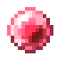
Prismatic Pearl
Không Tốn Ngọc · Không Cooldown
Rơi 33% từ Empress ban đêm · Hồi chiêu độc lập với Ender Pearl · Tự quay về túi đồ
Ngọc dịch chuyển không tiêu hao, bay nhanh hơn 25% và xa hơn 25% so với ngọc thường. Sau khi ném, ngọc tự quay về túi đồ sau 5 giây và có thời gian hồi chiêu tách biệt với Ender Pearl.
CÁCH LẤY: RƠI TỪ EMPRESS OF LIGHT BAN ĐÊM
→
Chỉ rơi khi tiêu diệt Empress of Light vào Ban Đêm tại Overworld hoặc tại The End.
Duskberry
Hồi Phục Sinh Mệnh
Hái tự nhiên tại End Shrubland · Hồi 4 Máu & 3 Độ no · Không gây dịch chuyển ngẫu nhiên
Quả mọng mọc tự nhiên tại quần xã End Shrubland. Khác với Chorus Fruit, Duskberry không gây dịch chuyển ngẫu nhiên, khi ăn hồi 4 Máu (2 tim), 3 điểm đói và tăng +12% sát thương tạm thời.
CÁCH LẤY: HÁI TỰ NHIÊN NGOÀI END SHRUBLAND
→
Nguồn thức ăn tự nhiên dễ thu hoạch khi đi qua quần xã End Shrubland.
Nhóm 4: Cần Câu & Thủy Sản Câu Cá Hư Không (Void Fishing)Câu Tại Các Đảo Ngoài (Outer Islands)
Người chơi có thể dùng cần câu thường hoặc Fisher of Voids buông phao xuống khoảng không tại các cụm Đảo Ngoài (Outer Islands) để câu các loài cá tăng máu vĩnh viễn và nguyên liệu nấu vạc:
Fisher of Voids
Cần Câu Hư Không
Tỉ lệ câu: 3.00% (Treasure Pool) · Giảm 4s–8s thời gian chờ cá cắn câu
Cần câu đặc chế vớt được từ bảng Kho Báu Quý (Treasure Pool - 3.00%) khi câu cá Hư Không tại các Đảo Ngoài. Khi sử dụng, cần câu giúp giảm 4 giây thời gian chờ tối thiểu và giảm 8 giây thời gian chờ tối đa so với cần câu thường.
CÁCH SỞ HỮU: KHO BÁU CÂU CÁ HƯ KHÔNG (3.00%)
→
Có thể ép thêm bùa Lure (mỗi cấp trừ thêm 5 giây thời gian chờ tối đa).
Crystal Heartfish
Tăng Máu Tối Đa Vĩnh Viễn
Tỉ lệ câu: 6.42% (Fish Pool mọi quần xã) · +1 Máu tối đa (+0.5 Tim) · Tối đa 10 lần
Loài cá pha lê hình trái tim (Fish of Vitality) câu được ở mọi quần xã Đảo Ngoài với tỉ lệ 6.42%. Mỗi con ăn vào giúp tăng vĩnh viễn +1 Máu tối đa (+0.5 Tim), cộng dồn tối đa 10 con để nhận +10 Máu (+5 Tim vĩnh viễn).
CÁCH LẤY: CÂU CÁ HƯ KHÔNG Ở MỌI QUẦN XÃ (6.42%)
→
Thuộc nhóm Cá Toàn Thể (Anywhere Fish Pool), câu được ở mọi quần xã ngoài Đảo Chính.
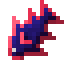
Prismite
Cá Quang Phổ The Hallow
Tỉ lệ câu: 54.4% tại The Hallow · Nguyên liệu nấu Prismatic Sushi, Lifeforce & Regeneraga
Loài cá phát quang câu được tại vùng Hư Không thuộc quần xã The Hallow (tỉ lệ 54.4%). Dùng làm nguyên liệu nấu món Prismatic Sushi và đun các bình thuốc Lifeforce Potion, Regeneraga trong Vạc Hơi Thở Rồng.
CÁCH LẤY: CÂU CÁ HƯ KHÔNG TẠI THE HALLOW (54.4%)
→
Chỉ xuất hiện khi buông cần trong phạm vi quần xã The Hallow.
Ender Koi
Cá Chép Hư Không Phổ Biến
Tỉ lệ câu: 24.08% (2–4 con/lần) · Câu ở mọi quần xã Đảo Ngoài · Nguyên liệu nấu Sushi
Loài cá chép phổ biến nhất khi câu cá Hư Không tại các Đảo Ngoài (tỉ lệ 24.08%, mỗi lần kéo lên 2–4 con). Dùng để thuần hóa Mèo End (Ender Cat) hoặc nấu món Sushi cùng tảo bẹ khô trong Vạc Hơi Thở Rồng.
CÁCH LẤY: CÂU CÁ HƯ KHÔNG Ở MỌI QUẦN XÃ (24.08%)
→
Câu được ở bất kỳ quần xã nào thuộc khu vực Đảo Ngoài (Outer Islands).
9. Khung Nấu Vạc: Thực Phẩm & Ẩm Thực Sinh Tồn (Cauldron Crafting)
Hệ thống nấu nướng sinh tồn đặc trưng của Stellarity sử dụng Vạc Nước Kích Hoạt Bằng Hơi Thở Rồng (Dragon's Breath Cauldron):
Quy tắc nấu vạc:
Năng Lượng Vạc: Đổ đầy nước vào Vạc rồi ném 1x Dragon's Breath. Mỗi bình cung cấp 7 điểm Breath trước khi cần nạp thêm bình mới.
Số Lượng Chính Xác (Exact Amount): Phải thả đúng số lượng nguyên liệu yêu cầu; nếu thừa vật phẩm, công thức sẽ không kích hoạt.
Thu Hồi Đồ Nấu: Có thể nhấp chuột phải vào vật phẩm đang nổi trong vạc để lấy lại vào túi đồ nếu ném nhầm.
Lưu Ý Muội Tinh Tú (Starlight Soot): Với mọi công thức có Starlight Soot, phải thả Soot vào cuối cùng; nếu thả trước, vạc sẽ chuyển thành nước Thánh Hóa (Consecration) và hủy công thức nấu.
Golden Chorus Fruit
Dịch Chuyển 2500m
Chi phí Vạc: 3 Dragon's Breath · Nguyên liệu nấu Phở
Ăn vào sẽ dịch chuyển ngẫu nhiên người chơi tới một mặt đất an toàn trong bán kính 2500 blocks. Đây cũng là nguyên liệu bắt buộc để nấu món Phở (Pho).
Nơi nấu: Breath CauldronTốn 3 Breath
+
Cũng có 14% tỉ lệ mở ra từ rương End City.
Thịt Enderman (Enderman Flesh)
Thực Phẩm & Nguyên Liệu
Hồi 2 và 0.8 · Dịch chuyển 8m · 80% Đói () 40s
Thịt sống thu hoạch trực tiếp từ quái Enderman. Tiêu thụ Enderman Flesh hồi 2 và 0.8 , đồng thời dịch chuyển tức thời người chơi ngẫu nhiên tối đa 8 blocks theo bất kỳ hướng nào. Khi ăn có 80% tỷ lệ dính hiệu ứng Đói Khát (Hunger) trong vòng 40 giây do độc tính Hư Không. Dùng làm nguyên liệu trực tiếp để nấu Thịt Enderman Nướng (Grilled Enderman Flesh) và món gỏi Frozen Carpaccio.
Cách nhận: Tiêu Diệt EndermanTỉ lệ rơi 0–2 Miếng / Con
➜
Mỗi con Enderman khi chết rơi từ 0–2 miếng thịt Enderman Flesh. Đem nướng trong Vạc với Bột Quỷ Lửa (Blaze Powder) để khử độc tạo thành Grilled Enderman Flesh.
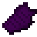
Thịt Enderman Nướng (Grilled Enderman Flesh)
Thực Phẩm Sinh Tồn
Chi phí Vạc: 1 Dragon's Breath · Hồi 3 và 9.6 · Nguyên liệu nấu Phở
Thịt Enderman tươi sau khi nướng chín trong vạc bằng hơi thở rồng và bột quỷ lửa, loại bỏ hoàn toàn độc tố và tác dụng phụ dịch chuyển lung tung. Hồi 3 và 9.6 . Là nguyên liệu cốt lõi để nấu món Phở (Pho).
Nơi nấu: Breath CauldronTốn 1 Breath
+➜
Thịt Enderman sống (Enderman Flesh) rơi từ Enderman (0-2 miếng/con). Nấu trong vạc cùng Bột Quỷ Lửa (Blaze Powder) để khử độc và nướng chín.
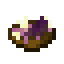
Phở (Pho)
Ăn Khi No · Cấp Absorption
Chi phí Vạc: 4 Dragon's Breath · Hồi 6.5 và 20 · Ăn khi no
Tô phở ấm nóng nấu trực tiếp trong Vạc Hơi Thở Rồng. Hồi 6.5 và 20 , cùng lượng lớn Máu hấp thụ (Absorption). Có thể ăn ngay cả khi thanh thức ăn đã đầy.
Nơi nấu: Breath CauldronTốn 4 Breath
++
Món Phở truyền thống nấu từ Quả Chorus Vàng, Bát gỗ và Thịt Enderman Nướng (Grilled Enderman Flesh).
Thịt Thân Shulker (Shulker Body)
Thực Phẩm & Tế Lễ
Hồi 2 và 0.8 · Dịch chuyển 16m · Ăn khi no · 30% Đói () 40s
Khối thịt thân mềm của quái Shulker sau khi tách khỏi vỏ. Ăn vào hồi 2 và 0.8 , đồng thời dịch chuyển tức thời ngẫu nhiên tối đa 16 blocks. Có 30% tỷ lệ dính hiệu ứng Đói khát () trong 40 giây. Có thể ăn ngay cả khi thanh đói đã đầy.
Cách nhận: Săn Quái ShulkerTỉ lệ rơi 75% (+5%/cấp Looting)
➜
Tooltip: "They are kinda like clams" (Vị ngậy tương tự nghêu sò). Dùng làm vật tế thức tỉnh Boss Shulking tại Altar of The Sacred hoặc nguyên liệu nấu bánh Shepherd's Pie.
Shepherd's Pie
Bánh Dinh Dưỡng Cao
Nấu Vạc: 1 Breath · Hồi 7 và 16.8 · No Lâu Dài
Món bánh nướng chế biến từ thịt thân Shulker, cà rốt vàng và khoai tây nướng. Cung cấp 7 đùi thức ăn và 16.8 điểm bão hòa (Saturation), giữ no lâu khi di chuyển qua các đảo ngoài.
Nơi nấu: Breath Cauldron1 Trong 7 Lần Nấu (1 Breath)
+++2➜
Thịt thân Shulker (Shulker Body) rơi 75% (+5%/cấp Looting) khi tiêu diệt Shulker hoặc thu được từ Boss Shulking. Nấu trong vạc cùng Cà rốt vàng, Khoai tây nướng và 2 quả Chorus để tạo bánh Shepherd's Pie.
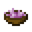
Chorus Stew
Súp Quả Chorus
Chi phí Vạc: 2 Dragon's Breath · Hồi 3 và 7.2 · Ăn không bị dịch chuyển
Món súp hầm từ Quả và Hoa Chorus. Khác với ăn quả Chorus sống, ăn món súp này sẽ không làm bạn bị dịch chuyển ngẫu nhiên, rất an toàn khi dùng gần mép Void.
Nơi nấu: Breath CauldronTốn 2 Breath
++
Hồi phục 6 đùi thức ăn và bổ sung nước cho nhân vật.
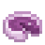
Chorus Pie
Bánh Nướng Chorus
Chi phí Vạc: 2 Dragon's Breath · Bánh ngọt End
Bánh ngọt chế biến từ Quả Chorus, Đường và Trứng Ender. Dễ mang theo từng xấp nhỏ khi di chuyển xa, hồi phục thể trạng nhanh chóng.
Nơi nấu: Breath CauldronTốn 2 Breath
++
Ender Egg có thể kiếm từ cấu trúc tổ quái The Nest.
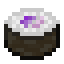
Sushi (Ender Koi)
Sushi Void Cổ Điển
Chi phí Vạc: 1 Dragon's Breath · Tốc độ ăn gấp đôi
Cuộn cơm sushi làm từ cá chép Ender Koi và tảo bẹ khô. Thời gian ăn nhanh gấp đôi thịt nướng thường.
Nơi nấu: Breath Cauldron1 Breath
+
Món ăn tiết kiệm điểm Breath từ nguồn cá Ender Koi phổ biến.
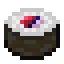
Prismatic Sushi
Sushi Cá Prismite
Chi phí Vạc: 2 Dragon's Breath · Hồi phục & Phát quang
Cuộn sushi làm từ cá Prismite tại hồ The Hallow. Ăn vào cho hiệu ứng Glowing (phát quang xuyên tường) và tăng tốc độ di chuyển trong thời gian ngắn.
Nơi nấu: Breath Cauldron2 Breath
+
Chế biến từ cá Prismite câu tại quần xã The Hallow.
Candied Chorus Fruit (Kẹo Chorus)
Món Ngọt The End
Hồi 2 và 2.4 · Khóa tính năng dịch chuyển
Quả Chorus được ướp lớp đường ngọt thanh trong vạc nước ấm. Vị ngọt giúp khóa chặt tính năng dịch chuyển bất định của quả Chorus thô, nên ăn không bị dịch chuyển.
Nơi nấu: Breath Cauldron1 trong 7 Lần Nấu
+2
Món ăn chế biến nhanh, tiện lợi mang theo khi chu du qua các cụm đảo End.
Fried Chorus Fruit (Chorus Chiên)
Món Chiên Giòn
Hồi 3 và 7.2 · Món Chiên Giòn
Quả Chorus bọc bột lúa mì được chiên vàng giòn trong vạc nhờ sức nóng từ bột quỷ lửa. Đem lại lượng dinh dưỡng dồi dào và khử bỏ hoàn toàn tính chất dịch chuyển của quả thô.
Nơi nấu: Breath Cauldron1 trong 7 Lần Nấu
++
Lựa chọn thực phẩm tích trữ chiến đấu thay thế thịt bò nướng hiệu quả.
Frozen Carpaccio (Gỏi Enderman Băng)
Đặc Sản Frosted Hills
Hồi 3 và 6.0 · Hồi Máu Tức Thì · Kháng Lạnh
Thịt Enderman tươi được thái lát mỏng và ướp đá lạnh giá buốt trong vạc. Nhiệt độ âm sâu triệt tiêu độc tố Hư Không, biến món ăn thành liều thuốc giải cứu người chơi khỏi cơn giá lạnh.
Nơi nấu: Breath Cauldron1 trong 7 Lần Nấu
+➜
Món khai vị đặc sắc của người thám hiểm các đới tuyết Frosted Hills. Nấu từ Thịt Enderman tươi (Enderman Flesh) và Khối Băng (Ice) trong vạc Hơi Thở Rồng.
Chorus Juice (Nước Ép Chorus)
Đồ Uống Giải Khát
Hồi 2 và 2.0 · Thời Gian Uống Nhanh
Nước ép nấu từ 2 quả Chorus và chai thủy tinh. Thời gian uống nhanh hơn thức ăn thông thường và không gây dịch chuyển ngẫu nhiên.
Nơi nấu: Breath Cauldron1 trong 7 Lần Nấu
2+➜
Sau khi uống sẽ trả lại 1 chai thủy tinh rỗng vào túi đồ.
Bottle o' Enchanting (Chai Kinh Nghiệm)
Chiết Xuất Ma Lực Vạc
Giải phóng 3 – 11 Điểm Kinh Nghiệm (XP) khi Ném
Pha 2 viên Ngọc Lưu Ly (Lapis Lazuli) với 1 chai thủy tinh rỗng trong Vạc Hơi Thở Rồng để tạo chai kinh nghiệm, dùng để sửa trang bị có bùa Mending khi đi xa.
Nơi nấu: Breath Cauldron1 trong 7 Lần Nấu
+2
Mỗi bình Dragon's Breath nấu được 7 chai Bottle o' Enchanting.
10. Khung Đun Thuốc: Thuốc Vạc & Độc Dược Đặc Chế
Hệ thống 12 dòng thuốc và độc dược đặc chế trong Vạc Hơi Thở Rồng (Breath Cauldron Crafting) từ tệp lệnh checks.mcfunction của Stellarity. Mỗi loại thuốc được tinh chế từ thủy sản Void, khoáng thạch End và dược liệu Nether, hiển thị đầy đủ công thức (văn bản kèm texture trực quan) và hiệu ứng chi tiết nhận được sau khi uống:
Lưu ý khi nấu thuốc:
Năng Lượng Vạc: Ném 1x Dragon's Breath vào vạc nước đầy sẽ nạp 7 điểm Breath.
Nâng Cấp Thuốc: Thuốc nấu xong có thể thả ngược vào vạc cùng 1x Redstone Dust để tạo bản Extended (Kéo dài thời gian), hoặc 1x Glowstone Dust để nâng lên Cấp II (Tăng hiệu lực).
Quy Tắc Thả Starlight Soot: Đối với các công thức có Starlight Soot (như Lifeforce, Regeneraga II, Royal Jelly), phải thả Soot vào cuối cùng. Nếu thả Soot trước khi cho các nguyên liệu khác, vạc sẽ chuyển sang chế độ Thánh Hóa (Consecration) và hủy công thức.
Blind Rage Potion
Sức mạnh + Bóng tối
Chi phí Vạc: 2 Dragon's Breath · Cấp độ: Sức Mạnh III · Thời gian: 15 giây
Cấp hiệu ứng Sức Mạnh III (Strength III, +9 sát thương cận chiến) nhưng đồng thời gây hiệu ứng Bóng Tối (Darkness) làm hẹp tầm nhìn trong 15 giây. Phù hợp để dồn sát thương cận chiến trong thời gian ngắn.
Nơi nấu: Breath CauldronTốn 2 Breath
+++
Nâng cấp dạng kéo dài (Ext): Đun tiếp với 1x Redstone (tốn thêm 1 Dragon's Breath).
Endurance Potion
Giảm Sát Thương 20% – 40%
Chi phí Vạc: 2 Dragon's Breath · Kháng Cự I / II · Thời gian: 2:00
Cung cấp hiệu ứng Kháng cự (Resistance I) trong 2 phút, giảm 20% mọi sát thương nhận vào (nâng lên 40% ở cấp II). Thường dùng trước khi đánh Boss hoặc vào phòng Trial Spawner.
Nơi nấu: Breath CauldronTốn 2 Breath
+++
Đun với Redstone để kéo dài thời gian (Ext, 3B) hoặc với Glowstone Dust để nâng lên Resistance II giảm 40% sát thương (3B).
Entanglement Potion
Khoá chân
Chi phí Vạc: 2 Dragon's Breath · Dạng Ném (Splash Potion) · Thời gian: 11 giây
Bình thuốc ném khống chế diện rộng: Khi va chạm mặt đất sẽ giải phóng năng lượng dây leo gai góc, làm quái vật và kẻ địch dính Làm chậm V (Slowness V) trong 11 giây. Giảm 75% tốc độ chạy khiến mục tiêu bị khoá chân gần như đứng yên.
Nơi nấu: Breath CauldronTốn 2 Breath
+++
Có thể đun thêm Redstone (kéo dài thời gian) hoặc Glowstone Dust (tăng cường độ làm chậm) với chi phí 3 Dragon's Breath.
Frost Cloud Potion
Làn khói lạnh đóng băng khu vực
Chi phí Vạc: 4 Dragon's Breath · Dạng Mây Tồn Lưu (Lingering) · Slowness Cấp 100
Ném ra tạo đám mây sương lạnh tồn lưu trên mặt đất trong 6 giây. Thực thể bước vào vùng mây sẽ chịu hiệu ứng Làm chậm Cấp 100 (Slowness 100) và bị giữ chân tại chỗ.
Nơi nấu: Breath CauldronTốn 4 Breath
++2+
Chế tạo từ loài cá Frost Minnow độc hữu câu được tại các đới tuyết Frosted Hills The End.
Hellfire Treader Potion
Kháng Lửa & Tốc Chạy 4 Phút
Chi phí Vạc: 2 Dragon's Breath · Speed + Fire Resistance · Thời gian: 4:00
Thuốc bước chân dung nham (Hellfire Treader): Kích hoạt đồng thời hiệu ứng Kháng Lửa (Fire Resistance) và Tốc độ Chạy (Speed) liên tục trong 4 phút (4800 ticks). Cho phép người uống di chuyển tốc độ cao qua các hồ dung nham rực lửa ở Nether và pháo đài Piglin an toàn.
Nơi nấu: Breath CauldronTốn 2 Breath
+++
Có thể nâng cấp kéo dài thời gian với Redstone (3B) hoặc nâng lên Speed II với Glowstone Dust (3B).
Lifeforce Potion
Health Boost I (3:00 / 6:00) · Cấp II (1:30)
Chi phí Vạc: 3 Dragon's Breath · Health Boost I (3:00 / 6:00) · Health Boost II (1:30)
Cung cấp hiệu ứng Health Boost I (+2 tim máu tối đa tạm thời) trong 3 phút. Khi đun thêm Redstone Dust (bản Extended), thời gian hiệu lực tăng lên 6 phút; khi đun thêm Glowstone Dust (Lifeforce II), hiệu lực nâng lên Health Boost II (+4 tim) trong 1 phút 30 giây.
Nơi nấu: Breath CauldronTốn 3 Breath
+++
Nấu tiếp với Redstone Dust để tạo bản Extended (Health Boost 6:00), hoặc đun với Glowstone Dust để nâng lên Lifeforce Potion II (Health Boost II 1:30).
Spelunker Potion
Tầm Nhìn Đêm & Đào Nhanh (Haste)
Chi phí Vạc: 2 Dragon's Breath · Night Vision + Haste · Thời gian: 3:00
Bình thuốc khai khoáng: Cung cấp hiệu ứng Tầm nhìn Đêm (Night Vision) kết hợp Vội Vã (Haste) gia tăng tốc độ đào quặng dưới lòng đất.
Nơi nấu: Breath CauldronTốn 2 Breath
+++
Có thể dùng Nấm Nâu hoặc Nấm Đỏ. Đun với Redstone để kéo dài hoặc Glowstone để lên Haste II.
Luck Potion
Tăng Tỉ Lệ Rơi Đồ Hiếm
Chi phí Vạc: 5 Dragon's Breath · Thuộc tính May Mắn · Thời gian: 5:00
Cung cấp chỉ số May Mắn (Luck +1) trong 5 phút, giúp tăng tỉ lệ câu được nhóm Kho Báu Quý (Treasure Pool) khi câu cá Hư Không và cải thiện chiến lợi phẩm khi mở rương.
Nơi nấu: Breath CauldronTốn 5 Breath
++2+
Yêu cầu 1 viên Kim Cương và 5 điểm Dragon's Breath trong vạc.
Poseidon's Nectar
Hiệu Ứng Đại Dương 6:30
Chi phí Vạc: 6 Dragon's Breath · 3 Hiệu Ứng Thủy Sinh · Thời gian: 6:30
Cấp đồng thời 3 hiệu ứng dưới nước trong 6 phút 30 giây: Sức mạnh Ống Dẫn (Conduit Power) (thở dưới nước, nhìn sáng và đào nhanh), Máu hấp thụ (Absorption) và Ân Huệ Cá Heo (Dolphin's Grace) (tăng tốc độ bơi).
Nơi nấu: Breath CauldronTốn 6 Breath
++++
Thuốc chuyên dụng để thám hiểm Đền thờ Đại Dương (Ocean Monument) và khám phá mạch nước ngầm.
Red Potion
Độc Dược 12 Hiệu Ứng Bất Lợi
Chi phí Vạc: 7 Dragon's Breath · Cảnh báo: Nguy hiểm tính mạng · Thời gian: Vĩnh viễn
Bình thuốc kèm dòng mô tả 'Cứ uống đi, làm sao mà chết được?': Gây cùng lúc 12 hiệu ứng bất lợi Cấp 10 vô thời hạn (Bóng tối, Chậm chạp, Đào chậm, Chóng mặt, Mù lòa, Đói khát, Yếu ớt, Trúng độc, Khô héo Wither, Phát quang, Xui xẻo) và Điềm Xấu (Bad Omen). Có thể giải trừ bằng Xô Sữa hoặc Royal Jelly.
Nơi nấu: Breath CauldronTốn 7 Breath
+++++
Thuốc độc thử thách độ bền bỉ hoặc dùng trong các minigame bẫy sinh tồn của máy chủ.
Regeneraga
Hồi máu tức thì
Chi phí Vạc: 4 Dragon's Breath · Instant Health II + Regeneration III (7s)
Hồi ngay lập tức 4 (Instant Health II) và cấp tiếp hiệu ứng Hồi Phục III (Regeneration III) trong 7 giây. Có thể đun thêm Starlight Soot để nâng cấp lên Regeneraga II.
Nơi nấu: Breath CauldronTốn 4 Breath
+++++
Đun tiếp với 1x Muội Tinh Tú (Starlight Soot) để nâng cấp lên Regeneraga II (tốn thêm 4 Dragon's Breath).
Royal Jelly (Mật Ong Hoàng Gia)
Thanh Tẩy Toàn Bộ 11 Hiệu Ứng Xấu
Chi phí Vạc: 5 Dragon's Breath · Thời gian uống 1.5s · Giải Trừ Hiệu Ứng Xấu
Thời gian uống 1.5 giây, hồi 3 đùi thức ăn (6 điểm đói), cấp Máu hấp thụ (Absorption) trong 1 phút và xóa toàn bộ 11 hiệu ứng bất lợi trên cơ thể (Wither, Điềm Xấu, Độc, Mù lòa, Suy yếu, Chậm chạp, Buồn nôn) mà không làm mất các hiệu ứng buff có lợi như khi uống Xô Sữa.
Nơi nấu: Breath CauldronTốn 5 Breath
++2
Đun tiếp với Muội Tinh Tú (tốn 3 Dragon's Breath) để nâng cấp lên Royal Jelly II duy trì lớp bảo hộ dài hơn.
11. Bản Quyền Tác Giả & Nguồn Dữ Liệu Chính Thức
Thông số trang bị, công thức tệp lệnh .mcfunction và hình ảnh minh họa trên trang này thuộc về dự án Stellarity:
Thông tin Bản quyền Stellarity (Copyright & Attribution)
Tác giả & Nhóm phát triển: Phát triển chính bởi kohara (trước đây là FokaStudio's Ender Expansion, bắt đầu từ bản port của Far End do Hex tạo), hiện được duy trì bởi nhóm Prismatic Shards / Void Realms.
Bản quyền Hình ảnh & Texture: Ảnh chụp khung cảnh in-game thuộc bản quyền của Dat1Mexican, Opliz, kohara và BananaKingXO. Icon dự án bởi MidasDaEpik; họa sĩ vẽ Sprite vật phẩm gồm kohara và YaGirlGiulles.
Giấy phép sử dụng (License): Phát hành công khai trên Modrinth và GitHub, cho phép sử dụng trên máy chủ Minecraft kèm ghi nhận tác giả.